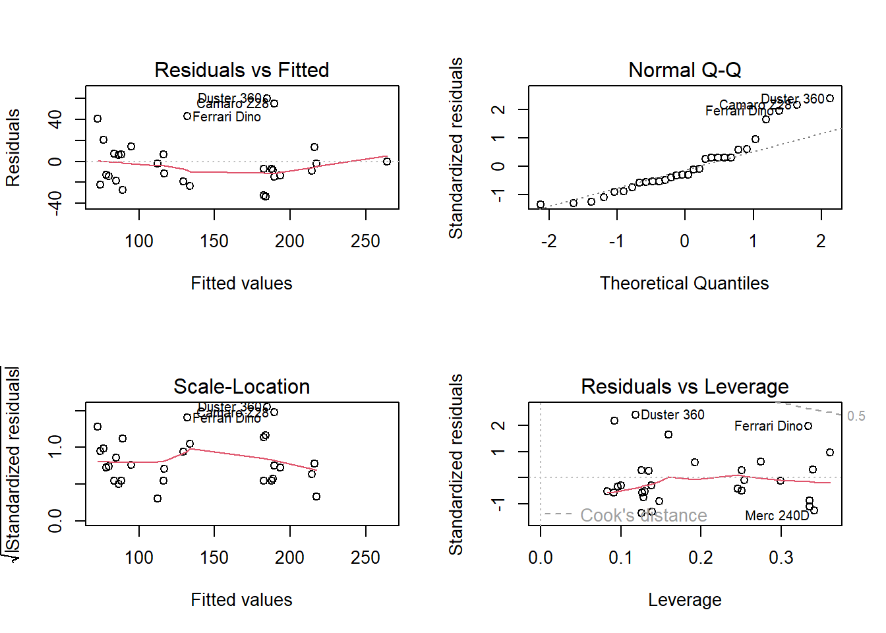
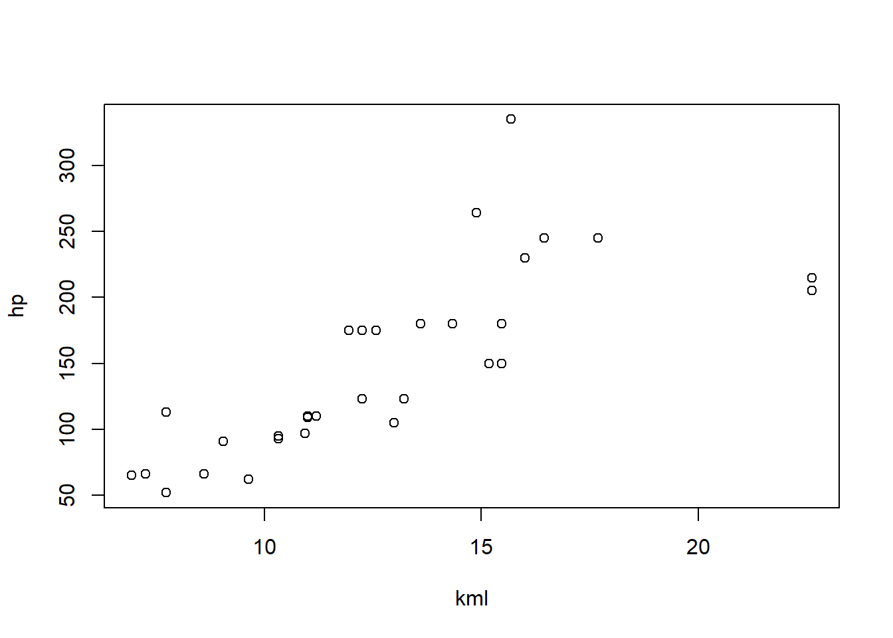
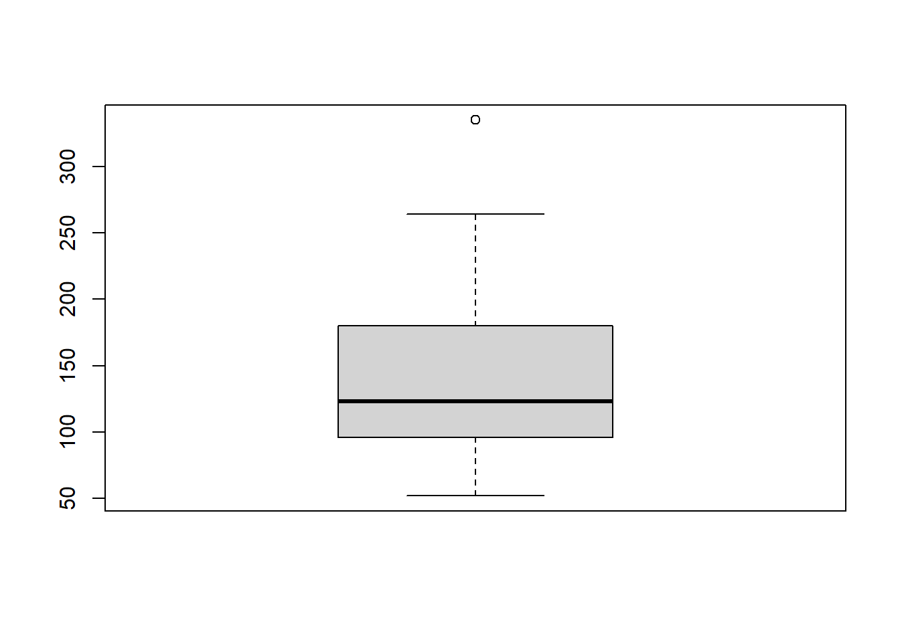
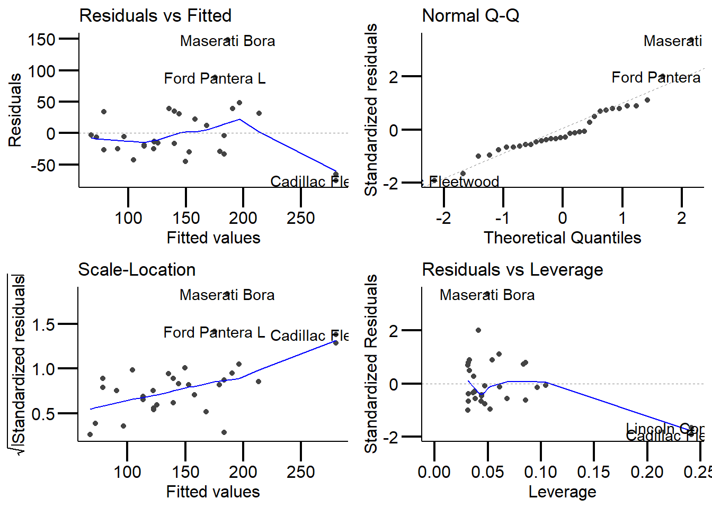
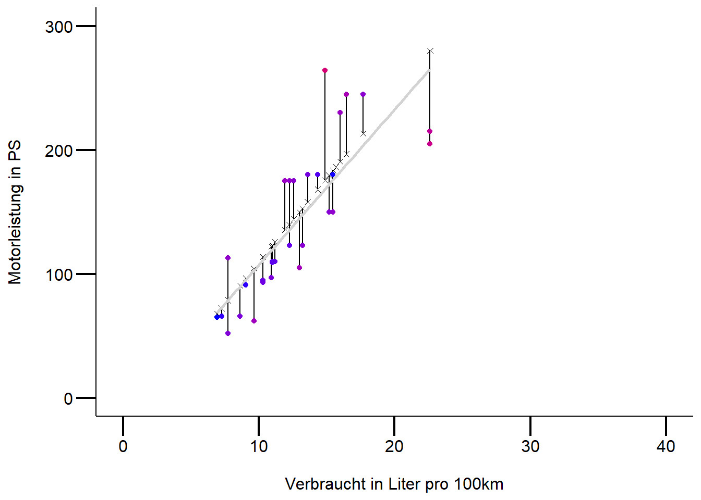
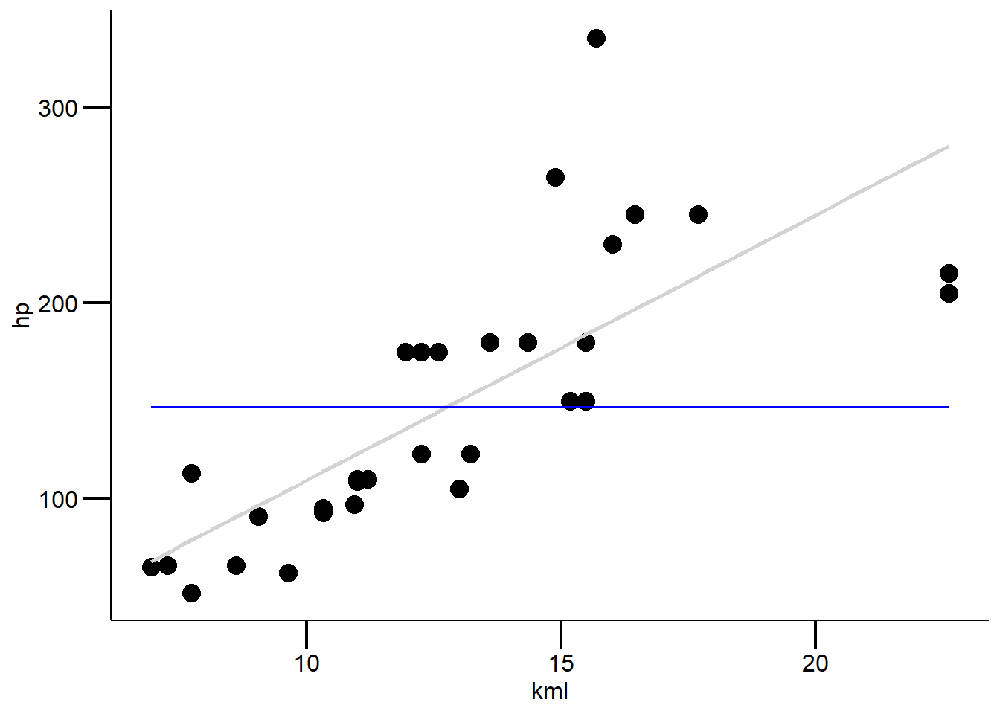
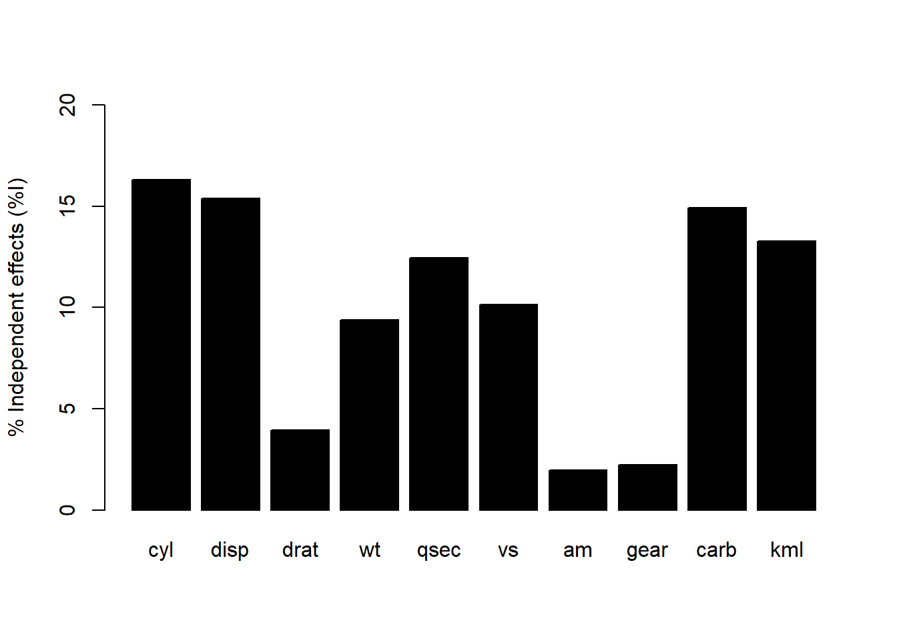

# für mehr infos
#https://stat.ethz.ch/R-manual/R-devel/library/datasets/html/mtcars.html
cars <- mtcars |>
mutate(cyl = as.factor(cyl)) |>
slice(-31) # lösch die 31ste Zeile
#Alternativ ginge auch das
cars[-31,]
# schaue daten zuerst mal an
#1. Responsevariable
hist(cars$hp) # nur sinnvoll bei grossem n
boxplot(cars$hp)
#2. Responsevariable ~ Prediktorvariable
table(cars$cyl) # mögliches probel, da n's unterschiedlich gross
boxplot(cars$hp ~ cars$cyl) # varianzheterogentität weniger das problem,
# aber normalverteilung der residuen problematisch
# definiere das modell für eine ein-faktorielle anova
aov.1 <- aov(log10(hp) ~ cyl, data = cars)
#3. Schaue Modelgüte an
par(mfrow = c(2,2))
plot(aov.1)
#4. Schaue output an und ordne es ein
summary.lm(aov.1)
#5. bei meheren Kategorien wende einen post-hoc Vergleichstest an
TukeyHSD(aov.1)
#6. Ergebnisse passend darstellen
library(multcomp)
#erstens die signifikanten Unterschiede mit Buchstaben versehen
letters <- multcomp::cld(multcomp::glht(aov.1, linfct=multcomp::mcp(cyl="Tukey"))) # Achtung die kategoriale
#Variable (unsere unabhängige Variable "cyl") muss als Faktor
#definiert sein z.B. as.factor()
#einfachere Variante
boxplot(hp ~ cyl, data = cars)
mtext(letters$mcletters$Letters, at=1:3)
#schönere Variante :)
ggplot(cars, aes(x = cyl, y = hp)) +
stat_boxplot(geom = "errorbar", width = .5) +
geom_boxplot(size = 1) +
annotate("text", x = 1, y = 350, label = "a", size = 7)+
annotate("text", x = 2, y = 350, label = "b", size = 7)+
annotate("text", x = 3, y = 350, label = "c", size = 7)
labs(x = "\nAnzahl Zylinder", y = "Pferdestärke") +
mytheme
#Plot exportieren
ggsave(filename = "statKons/distill-preview.png",
device = "png") # hier kann man festlegen, was für ein Bildformat
#exportiert werden möchte
# Sind die Voraussetzungen für eine Anova verletzt, überprüfe alternative
# nicht-parametische Tests z.B. oneway-Test mit Welch-korrektur für ungleiche
# Varianzen (Achtung auch dieser Test hat Voraussetzungen -> siehe Skript XY)
library(rosetta)
welch1 <- oneway.test(hp ~ cyl, data = cars, var.equal = FALSE)
rosetta::posthocTGH(cars$hp, cars$cyl, method = "games-howell")StatKons3: Demo
- Download dieses Demoscript via “</>Code” (oben rechts)
Einfaktorielle ANOVA
Mehrfaktorielle ANOVA

Call:
aov(formula = hp ~ cyl * am + wt, data = cars)
Residuals:
Min 1Q Median 3Q Max
-33.834 -14.280 -7.418 7.120 60.282
Coefficients:
Estimate Std. Error t value Pr(>|t|)
(Intercept) 32.743 31.636 1.035 0.310980
cyl6 22.556 20.859 1.081 0.290274
cyl8 88.818 20.463 4.340 0.000222 ***
am 13.002 19.952 0.652 0.520811
wt 17.691 9.409 1.880 0.072272 .
cyl6:am 14.626 27.392 0.534 0.598276
cyl8:am 73.356 33.194 2.210 0.036894 *
---
Signif. codes: 0 '***' 0.001 '**' 0.01 '*' 0.05 '.' 0.1 ' ' 1
Residual standard error: 26.73 on 24 degrees of freedom
Multiple R-squared: 0.8428, Adjusted R-squared: 0.8035
F-statistic: 21.45 on 6 and 24 DF, p-value: 1.511e-08Einfache Regression
# inspiriert von Simon Jackson: http s://drsimonj.svbtle.com/visualising-residuals
cars <- mtcars |>
#ändere die unabhängige Variable mpg in 100Km/L
mutate(kml = (235.214583/mpg)) # mehr Infos hier: https://www.asknumbers.com/mpg-to-L100km.aspx
# |> # klone data set
# slice(-31) # # lösche Maserrati und schaue nochmals Modelfit an
#############
##1.Daten anschauen
############
# Zusammenhang mal anschauen
# Achtung kml = 100km pro Liter
plot(hp ~ kml, data = cars)
# Responsevariable anschauen
boxplot(cars$hp)
# Korrelationen uv + av anschauen
# Reihenfolge spielt hier keine Rolle, wieso?
cor(cars$kml, cars$hp) # hängen stark zusammen[1] 0.7629477###################
#2. Modell definieren: einfache regression
##################
model <- lm(hp ~ kml, data = cars)
summary.lm(model)
Call:
lm(formula = hp ~ kml, data = cars)
Residuals:
Min 1Q Median 3Q Max
-75.22 -25.52 -13.31 30.92 148.69
Coefficients:
Estimate Std. Error t value Pr(>|t|)
(Intercept) -26.021 27.880 -0.933 0.358
kml 13.540 2.095 6.464 3.84e-07 ***
---
Signif. codes: 0 '***' 0.001 '**' 0.01 '*' 0.05 '.' 0.1 ' ' 1
Residual standard error: 45.06 on 30 degrees of freedom
Multiple R-squared: 0.5821, Adjusted R-squared: 0.5682
F-statistic: 41.79 on 1 and 30 DF, p-value: 3.839e-07###############
#3.Modeldiagnostik und ggf. Anpassungen ans Modell oder ähnliches
###############
# semi schöne Ergebnisse
library(ggfortify)
ggplot2::autoplot(model) + mytheme # gitb einige Extremwerte => was tun? (Eingabe/Einlesen 
#überprüfen, Transformation, Extremwerte nur ausschliessen mit guter Begründung)
# erzeuge vorhergesagte Werte und Residualwerte
cars$predicted <- predict(model) # bilde neue Variable mit geschätzten y-Werten
cars$residuals <- residuals(model)
# schaue es dir an, sieht man gut was die Residuen sind
d <- cars |>
dplyr::select(hp, kml, predicted, residuals)
# schauen wir es uns an
head(d, 4) hp kml predicted residuals
Mazda RX4 110 11.20069 125.6411 -15.64107
Mazda RX4 Wag 110 11.20069 125.6411 -15.64107
Datsun 710 93 10.31643 113.6678 -20.66776
Hornet 4 Drive 110 10.99134 122.8063 -12.80626#visualisiere residuen
ggplot(d, aes(x = kml, y = hp)) +
# verbinde beobachtete werte mit vorausgesagte werte
geom_segment(aes(xend = kml, yend = predicted)) +
geom_point() + # Plot the actual points
geom_point(aes(y = predicted), shape = 4) + # plot geschätzten y-Werten
# geom_line(aes(y = predicted), color = "lightgrey") # alternativ code
geom_smooth(method = "lm", se = FALSE, color = "lightgrey") +
# Farbe wird hier zu den redisuen gemapped, abs(residuals) wegen negativen zahlen
geom_point(aes(color = abs(residuals))) +
# Colors to use here (für mehrere farben verwende color_gradient2)
scale_color_continuous(low = "blue", high = "red") +
scale_x_continuous(limits = c(0, 40)) +
scale_y_continuous(limits = c(0, 300)) +
guides(color = "none") + # Color legende entfernen
labs(x = "\nVerbraucht in Liter pro 100km", y = "Motorleistung in PS\n") +
mytheme
##########
#4. plotte Ergebnis
##########
ggplot(d, aes(x = kml, y = hp)) +
geom_point(size = 4) +
# geom_point(aes(y = predicted), shape = 1, size = 4) +
# plot regression line
geom_smooth(method = "lm", se = FALSE, color = "lightgrey") +
#intercept
geom_line(aes(y = mean(hp)), color = "blue") +
mytheme
Multiple Regression
# Select data
cars <- mtcars |>
slice(-31) |>
mutate(kml = (235.214583/mpg)) |>
dplyr::select(kml, hp, wt, disp)
################
# 1. Multikollinearitüt überprüfen
# Korrelation zwischen Prädiktoren kleiner .7
cor <- cor(cars[, -2])
cor[abs(cor)<0.7] <- 0
cor # kml wt disp
kml 1.0000000 0.8912658 0.8786238
wt 0.8912658 1.0000000 0.8878515
disp 0.8786238 0.8878515 1.0000000##### info zu Variablen
#wt = gewicht
#disp = hubraum
###############
#2. Responsevariable + Kriteriumsvariable anschauen
##############
# was würdet ihr tun?
############
#3. Definiere das Model
############
model1 <- lm(hp ~ kml + wt + disp, data = cars)
model2 <- lm(hp ~ kml + wt, data = cars)
model3 <- lm(log10(hp) ~ kml + wt, data = cars)
#############
#4. Modeldiagnostik
############
library(ggfortify)
ggplot2::autoplot(model1)
ggplot2::autoplot(model2) # besser, immernoch nicht ok => transformation? vgl. model3
ggplot2::autoplot(model3)
############
#5. Modellfit vorhersagen: wie gut sagt mein Modell meine Daten vorher
############
#es gibt 3 Mögliche Wege
# gebe dir predicted values aus für model2 (für vorzeigebeispiel einfacher :)
# gibts unterschidliche varianten die predicted values zu berechnen
# 1. default funktion predict(model) verwenden
cars$predicted <- predict(model2)
# 2. datensatz selber zusammenstellen (nicht empfohlen): wichtig, die
# prädiktoren müssen denselben
# namen haben wie im Model
# besser mit Traindata von Beginn an mehr Infos hier: https://www.r-bloggers.com/using-linear-regression-to-predict-energy-output-of-a-power-plant/
new.data <- tibble(kml = sample(seq(6.9384, 22.61, .3), 31),
wt = sample(seq(1.513, 5.424, 0.01), 31),
disp = sample(seq(71.1, 472.0, .1), 31))
cars$predicted_own <- predict(model2, newdata = new.data)
# 3. train_test_split durchführen (empfohlen) muss jedoch von beginn an bereits
# gemacht werden - Logik findet ihr hier: https://towardsdatascience.com/train-test-split-and-cross-validation-in-python-80b61beca4b6 oder https://towardsdatascience.com/6-amateur-mistakes-ive-made-working-with-train-test-splits-916fabb421bb
# beispiel hier: https://ijlyttle.github.io/model_cv_selection.html
cars <- mtcars |>
mutate(id = row_number()) |> # für das mergen der Datensätze
mutate(kml = (235.214583/mpg)) |>
dplyr::select(kml, hp, wt, disp, id)
train_data <- cars |>
dplyr::sample_frac(.75) # für das Modellfitting
test_data <- dplyr::anti_join(cars, train_data, by = 'id') # für den Test mit predict
# erstelle das Modell und "trainiere" es auf den train Datensatz
model2_train <- lm(hp ~ kml + wt, data = train_data)
# mit dem "neuen" Datensatz wird das Model überprüft ob guter Modelfit
train_data$predicted_test <- predict(model2_train, newdata = test_data)
# Residuen
train_data$residuals <- residuals(model2_train)
head(train_data) kml hp wt disp id predicted_test residuals
Porsche 914-2 9.046715 91 2.14 120.3 27 128.2610 -9.289083
Merc 240D 9.639942 62 3.19 146.7 8 121.6408 -29.718116
Merc 450SL 13.596219 180 3.73 275.8 13 137.9286 21.351969
Merc 230 10.316429 95 3.15 140.8 9 166.6977 -10.703553
Mazda RX4 11.200694 110 2.62 160.0 1 302.3668 -23.157355
Valiant 12.995281 105 3.46 225.0 6 201.0136 -47.091165#weiterführende Infos zu "machine learning" Idee hier: https://stat-ata-asu.github.io/MachineLearningToolbox/regression-models-fitting-them-and-evaluating-their-performance.html
#wichtigstes Packet in dieser Hinsicht ist "caret": https://topepo.github.io/caret/
#beste Philosophie ist tidymodels: https://www.tidymodels.org
#----------------
# Schnelle variante mit broom
d <- lm(hp ~ kml + wt + disp, data = cars) |>
broom::augment()
head(d)# A tibble: 6 × 11
.rownames hp kml wt disp .fitted .resid .hat .sigma .cooksd .std.…¹
<chr> <dbl> <dbl> <dbl> <dbl> <dbl> <dbl> <dbl> <dbl> <dbl> <dbl>
1 Mazda RX4 110 11.2 2.62 160 123. -12.7 0.0478 41.4 1.29e-3 -0.320
2 Mazda RX… 110 11.2 2.88 160 114. -4.21 0.0456 41.4 1.34e-4 -0.106
3 Datsun 7… 93 10.3 2.32 108 103. -9.87 0.0758 41.4 1.31e-3 -0.252
4 Hornet 4… 110 11.0 3.22 258 142. -31.6 0.0958 41.0 1.77e-2 -0.817
5 Hornet S… 175 12.6 3.44 360 191. -16.3 0.210 41.3 1.35e-2 -0.451
6 Valiant 105 13.0 3.46 225 138. -33.5 0.0445 40.9 8.22e-3 -0.841
# … with abbreviated variable name ¹.std.residggplot(d, aes(x = kml, y = hp)) +
geom_segment(aes(xend = kml, yend = .fitted), alpha = .2) +
geom_point(aes(color = .resid)) +
scale_color_gradient2(low = "blue", mid = "white", high = "red") +
guides(color = "none") +
geom_point(aes(y = .fitted), shape = 4) +
scale_y_continuous(limits = c(0,350)) +
geom_smooth(method = "lm", se = FALSE, color = "lightgrey") +
mytheme
############
# 6. Modellvereinfachung
############
# Varianzpartitionierung
library(hier.part)
cars <- mtcars |>
mutate(kml = (235.214583/mpg)) |>
select(-mpg)
names(cars) # finde "position" deiner Responsevariable [1] "cyl" "disp" "hp" "drat" "wt" "qsec" "vs" "am" "gear" "carb"
[11] "kml" X = cars[, -3] # definiere all die Prädiktorvariablen im Model (minus Responsevar)
# dauert ein paar sekunden
hier.part(cars$hp, X, gof = "Rsqu")500 regressions calculated: 523 to go...
1000 regressions calculated: 23 to go...
$gfs
[1] 0.00000000 0.69296876 0.62559967 0.20138474 0.43394878 0.50158037
[7] 0.52286889 0.05914831 0.01580156 0.56221874 0.58208914 0.70157840
[13] 0.72811946 0.69310853 0.76472964 0.69973299 0.74359881 0.79980295
[19] 0.82698425 0.71463110 0.65135711 0.63458742 0.78986030 0.67805901
[25] 0.70303368 0.76796282 0.85228877 0.64550208 0.43480718 0.65040165
[31] 0.54396026 0.21331941 0.27079847 0.70834337 0.58453013 0.79682873
[37] 0.61867036 0.52110134 0.53525623 0.70212836 0.58404878 0.58760284
[43] 0.67560899 0.58155670 0.64428779 0.78331171 0.53805532 0.52343441
[49] 0.69191341 0.67551298 0.07144882 0.64448408 0.62225549 0.68082647
[55] 0.65681652 0.74983258 0.74931259 0.70639896 0.79600184 0.70972432
[61] 0.77443849 0.83916007 0.85842295 0.71471071 0.73577619 0.76677218
[67] 0.72881813 0.74880327 0.79980419 0.82747926 0.76073032 0.80549436
[73] 0.70066373 0.76798297 0.81963721 0.82698589 0.73089012 0.77152979
[79] 0.76531898 0.80207405 0.83638196 0.80713597 0.74506651 0.80185437
[85] 0.82753527 0.72291301 0.80007453 0.83107368 0.78553239 0.83517997
[91] 0.83988461 0.83282477 0.65450206 0.79040652 0.69545535 0.70342648
[97] 0.76975533 0.85276296 0.67311870 0.80645505 0.67984470 0.70423023
[103] 0.76800148 0.88633511 0.68161844 0.79458833 0.78995083 0.81733322
[109] 0.87660075 0.80864047 0.71692886 0.78083420 0.85261741 0.69522623
[115] 0.76847585 0.86213216 0.72724133 0.86062854 0.78538181 0.85578157
[121] 0.79682882 0.62258483 0.53307390 0.55750492 0.72594325 0.58521928
[127] 0.65908922 0.68707690 0.65041286 0.78158349 0.78577787 0.54467000
[133] 0.57375200 0.74955132 0.67987210 0.27404880 0.70858640 0.62839108
[139] 0.71547356 0.67510461 0.76238306 0.80258451 0.79683588 0.80465509
[145] 0.82377636 0.80518231 0.64137188 0.67979455 0.75230630 0.67651288
[151] 0.54772191 0.70242151 0.62860220 0.70740146 0.66147555 0.74983405
[157] 0.68341227 0.60817564 0.69980065 0.78347917 0.68064593 0.78280726
[163] 0.78738551 0.77225036 0.78702703 0.81727279 0.57643275 0.73385576
[169] 0.69023966 0.73264901 0.72856575 0.77905576 0.68099695 0.65682800
[175] 0.74986342 0.75030963 0.74939731 0.80048400 0.75005477 0.78224997
[181] 0.83969940 0.86143703 0.76351250 0.80899531 0.71229793 0.77786952
[187] 0.83948092 0.88822668 0.73686503 0.80606074 0.79904706 0.84407043
[193] 0.87717914 0.81272272 0.77765300 0.84185630 0.85880837 0.72312144
[199] 0.83946012 0.87138757 0.79122414 0.87517192 0.85049347 0.86111599
[205] 0.80909657 0.73715485 0.77562212 0.82064219 0.82762494 0.76358599
[211] 0.77346294 0.76694706 0.80221403 0.83684121 0.81053364 0.75037337
[217] 0.80189505 0.82829718 0.76151537 0.80010938 0.83113283 0.79204699
[223] 0.83538215 0.84028882 0.83500551 0.81865915 0.80894538 0.83692488
[229] 0.84479937 0.81292299 0.77051366 0.82068764 0.82755459 0.73463898
[235] 0.82185155 0.83374702 0.78585187 0.83906576 0.83988614 0.83842062
[241] 0.77283425 0.80764242 0.84340919 0.81651659 0.80468638 0.83645252
[247] 0.80953707 0.83806169 0.84553086 0.85051102 0.80185450 0.83445915
[253] 0.78835469 0.83756422 0.84194292 0.83302726 0.83524642 0.84023880
[259] 0.84267457 0.85185481 0.80776007 0.69560375 0.70465947 0.76992472
[265] 0.88797469 0.69590025 0.79475437 0.79040653 0.81993093 0.87676292
[271] 0.80951951 0.71817514 0.78220335 0.85309291 0.71427479 0.77093557
[277] 0.86282428 0.72773282 0.86111881 0.78656188 0.85590592 0.81529801
[283] 0.80751257 0.82987551 0.88679624 0.81227004 0.71850400 0.78101802
[289] 0.88899561 0.71208613 0.76848755 0.88642012 0.73047097 0.88636212
[295] 0.79295923 0.88732769 0.79464213 0.81911897 0.88487494 0.81441091
[301] 0.82405506 0.87668384 0.80905209 0.87794489 0.83509981 0.87672526
[307] 0.78105018 0.86235675 0.73858142 0.86081485 0.79713715 0.85584897
[313] 0.86352513 0.78662956 0.86336685 0.86149172 0.80278704 0.79683898
[319] 0.80755004 0.82899357 0.80520063 0.64156584 0.68582982 0.76190272
[325] 0.67989363 0.57620483 0.73078262 0.63317753 0.72612205 0.67641277
[331] 0.76496215 0.69059935 0.65990058 0.78269863 0.78662265 0.70081945
[337] 0.80113308 0.78768414 0.79531362 0.79723923 0.82997438 0.59747082
[343] 0.75193216 0.69033206 0.75207780 0.73659729 0.78496552 0.71720318
[349] 0.67670416 0.76691030 0.76376253 0.80263436 0.80779564 0.82628524
[355] 0.81041747 0.80926844 0.82748766 0.80518231 0.82441337 0.81520211
[361] 0.83130358 0.68003202 0.75266080 0.69220997 0.75283569 0.73256860
[367] 0.77905599 0.71082525 0.66274549 0.74986926 0.75046281 0.69338903
[373] 0.78552251 0.78810331 0.77281408 0.78707052 0.81727991 0.79067323
[379] 0.80392387 0.82893834 0.82087151 0.73760383 0.73261860 0.77931744
[385] 0.77907645 0.75090888 0.81335565 0.75008101 0.78622129 0.84021003
[391] 0.88874381 0.77064747 0.81050035 0.80211285 0.84410211 0.87718004
[397] 0.81712113 0.78575072 0.84273585 0.86242466 0.76429972 0.83983431
[403] 0.87143090 0.79881222 0.87523450 0.85124175 0.86304134 0.82212211
[409] 0.81306778 0.84839637 0.88828036 0.81505250 0.78117989 0.84196298
[415] 0.89416092 0.74003809 0.84021599 0.88826643 0.79143221 0.88934404
[421] 0.85256750 0.88923203 0.81125300 0.85294282 0.88806408 0.82323184
[427] 0.84467626 0.87777654 0.81619473 0.88100639 0.85683202 0.87731384
[433] 0.84347569 0.87788010 0.79471151 0.87825770 0.85294815 0.86186269
[439] 0.87703205 0.85126670 0.87185100 0.87517400 0.82220832 0.81115486
[445] 0.83697572 0.84480380 0.81668240 0.77838416 0.82191676 0.82835138
[451] 0.76397958 0.82234662 0.83375960 0.79269545 0.83907720 0.84031885
[457] 0.83895729 0.77411887 0.80778796 0.84393058 0.81979543 0.80469861
[463] 0.83685348 0.81180181 0.83893754 0.84553203 0.85051407 0.80189675
[469] 0.83451815 0.79505514 0.83763992 0.84259487 0.83552708 0.83554704
[475] 0.84048439 0.84274953 0.85187865 0.82494750 0.84800660 0.85495070
[481] 0.82492519 0.83705985 0.84502260 0.81633367 0.84931483 0.84807391
[487] 0.85073524 0.82470970 0.83748586 0.78874689 0.84083290 0.84196486
[493] 0.83937773 0.84042228 0.84034197 0.84330667 0.85237763 0.80918158
[499] 0.84342039 0.82062959 0.84473677 0.85346381 0.85908153 0.83871997
[505] 0.84619696 0.85066660 0.85698636 0.83838604 0.84344726 0.84674879
[511] 0.85412611 0.85249411 0.81583638 0.80814642 0.83101658 0.88835012
[517] 0.81349924 0.71984178 0.78225902 0.89128573 0.72414022 0.77093574
[523] 0.88800097 0.73091120 0.88842653 0.79522731 0.88887974 0.79475936
[529] 0.82217601 0.88566925 0.81474431 0.82499929 0.87701266 0.80959947
[535] 0.87887843 0.83694379 0.87692760 0.78222336 0.86322400 0.73988522
[541] 0.86128928 0.79800659 0.85597973 0.86485586 0.78860298 0.86421716
[547] 0.86202393 0.81635774 0.83431271 0.89223343 0.82018617 0.83286533
[553] 0.88704414 0.81318690 0.88682147 0.83687230 0.88767504 0.78112400
[559] 0.88899718 0.74075349 0.88900097 0.80126982 0.88998534 0.88654594
[565] 0.79296307 0.88742913 0.88743462 0.82547907 0.88491353 0.81474148
[571] 0.88516201 0.83758418 0.88496738 0.87811609 0.83981887 0.87679143
[577] 0.87794755 0.86357824 0.79713720 0.86370655 0.86157233 0.86423977
[583] 0.80278722 0.81117207 0.83265317 0.81051062 0.81077238 0.83025662
[589] 0.80520620 0.82899672 0.81834862 0.83580922 0.68583999 0.76228795
[595] 0.69223194 0.76205386 0.73840564 0.78622935 0.73281147 0.67981848
[601] 0.76736840 0.76545206 0.70788698 0.80125314 0.78867524 0.79534978
[607] 0.79732333 0.83093399 0.80295255 0.80793844 0.83330983 0.83000472
[613] 0.75256542 0.73797608 0.78575249 0.78706983 0.76692166 0.81165979
[619] 0.83002262 0.81043624 0.82751635 0.81759372 0.83352086 0.82754595
[625] 0.82058838 0.83460603 0.83139455 0.75289702 0.73415534 0.77946294
[631] 0.77907969 0.75091409 0.79108147 0.80394434 0.82928780 0.82120079
[637] 0.82902597 0.77971944 0.82641981 0.81579640 0.84848813 0.88884932
[643] 0.81941006 0.78984038 0.84297941 0.89444052 0.77083045 0.84069196
[649] 0.88887897 0.79888878 0.89013075 0.85292360 0.88969019 0.81382048
[655] 0.85297988 0.88806681 0.82758606 0.84476751 0.87781882 0.81908820
[661] 0.88115422 0.85688939 0.87732010 0.84390434 0.87793232 0.80259137
[667] 0.87847102 0.85406979 0.86430862 0.87704993 0.85170006 0.87186452
[673] 0.87523955 0.82925562 0.85910108 0.89634683 0.82712803 0.84858068
[679] 0.88829197 0.81895685 0.88934427 0.85683277 0.88924950 0.84427088
[685] 0.89545024 0.79491085 0.89588417 0.85588787 0.89517205 0.88939702
[691] 0.85265270 0.88926174 0.89084900 0.85300192 0.88978666 0.82904912
[697] 0.89133564 0.86612213 0.88817211 0.88101024 0.85715147 0.87786381
[703] 0.88106657 0.88319075 0.85550678 0.87841816 0.87825828 0.87703903
[709] 0.82663055 0.84807892 0.85495072 0.82862026 0.83713957 0.84504803
[715] 0.81867865 0.84944900 0.84810148 0.85073533 0.82526030 0.83750442
[721] 0.79581587 0.84088250 0.84259493 0.84010082 0.84043919 0.84062577
[727] 0.84332954 0.85237812 0.80921291 0.84401219 0.82242699 0.84564483
[733] 0.85346520 0.85908639 0.83936578 0.84622423 0.85068659 0.85717095
[739] 0.83867667 0.84372531 0.84683293 0.85423403 0.85249896 0.84811534
[745] 0.85615939 0.83102995 0.85931200 0.85772302 0.86001659 0.84937581
[751] 0.84835934 0.85097379 0.85744811 0.84396992 0.84359567 0.84729276
[757] 0.85500794 0.85267553 0.84487316 0.85356865 0.85981845 0.86505202
[763] 0.85724838 0.85631995 0.81647712 0.83577770 0.89464137 0.82071041
[769] 0.83334132 0.88835112 0.81381193 0.88877867 0.83824412 0.88915899
[775] 0.78226285 0.89161027 0.74194676 0.89152049 0.80289912 0.89217114
[781] 0.88844443 0.79529126 0.88889472 0.88957157 0.82672488 0.88605596
[787] 0.81488188 0.88659038 0.83986812 0.88584270 0.87891106 0.84050919
[793] 0.87716028 0.87888322 0.86500667 0.79807493 0.86480843 0.86209170
[799] 0.86560950 0.83654931 0.89245247 0.82111608 0.89229802 0.84048960
[805] 0.89287849 0.88727578 0.84048569 0.88792432 0.88777324 0.88900097
[811] 0.80199182 0.88998982 0.88999308 0.88774851 0.88517659 0.84190441
[817] 0.88499616 0.88519038 0.87811672 0.86437433 0.81360270 0.83369901
[823] 0.81051067 0.83270369 0.82116980 0.83905230 0.83063245 0.82217644
[829] 0.83696755 0.83607536 0.76230183 0.73889549 0.78639725 0.78754388
[835] 0.76736987 0.80295609 0.80796927 0.83447993 0.83109967 0.83401365
[841] 0.78708304 0.83003285 0.82225575 0.83685418 0.83388387 0.83518594
[847] 0.77981201 0.82930752 0.83140115 0.85921967 0.89681280 0.83142564
[853] 0.84871760 0.88891309 0.82171752 0.89013550 0.85689115 0.88973981
[859] 0.84481151 0.89606071 0.80266059 0.89640724 0.85647331 0.89540826
[865] 0.89013600 0.85295445 0.88980008 0.89160423 0.85305640 0.88991347
[871] 0.83144372 0.89148016 0.86618736 0.88818141 0.88117092 0.85726072
[877] 0.87792190 0.88120016 0.88320145 0.85600093 0.87843497 0.87847144
[883] 0.87705497 0.85916643 0.89679757 0.83393203 0.89739528 0.86634127
[889] 0.89706337 0.88940374 0.85715611 0.88926561 0.89089032 0.89635868
[895] 0.85687869 0.89639831 0.89752554 0.89098576 0.89179711 0.86612220
[901] 0.88982737 0.89139211 0.88106983 0.88319078 0.84816501 0.85620654
[907] 0.83284123 0.85940111 0.85776734 0.86002063 0.84948612 0.84842015
[913] 0.85098107 0.85756825 0.84398054 0.84392263 0.84732395 0.85502103
[919] 0.85269322 0.84568418 0.85357682 0.85988554 0.86523618 0.85736847
[925] 0.85632240 0.85948271 0.85773876 0.86120122 0.86638495 0.85761273
[931] 0.85646008 0.86505206 0.83732041 0.89465896 0.82124843 0.89473454
[937] 0.84216516 0.89519471 0.88890183 0.84106104 0.88916095 0.88981388
[943] 0.89167362 0.80321787 0.89245062 0.89258284 0.88964169 0.88662841
[949] 0.84290505 0.88620774 0.88662831 0.87891425 0.86589491 0.89245260
[955] 0.84332059 0.89309921 0.89289204 0.88837223 0.89001157 0.88520233
[961] 0.83377073 0.82421766 0.84001726 0.83910920 0.83819573 0.78756523
[967] 0.83484756 0.83704422 0.85926256 0.89747126 0.83612316 0.89806188
[973] 0.86642260 0.89746929 0.89014701 0.85726387 0.88980804 0.89161831
[979] 0.89708223 0.85723229 0.89693645 0.89801934 0.89165058 0.89205220
[985] 0.86618979 0.88997287 0.89152300 0.88121501 0.88320147 0.89751694
[991] 0.86634862 0.89752581 0.89860693 0.89099017 0.89782747 0.89184702
[997] 0.85961682 0.85777650 0.86122268 0.86646544 0.85769519 0.85647113
[1003] 0.86524104 0.86643678 0.89473457 0.84416912 0.89520888 0.89538743
[1009] 0.89001534 0.89264873 0.88667278 0.89312374 0.84061700 0.89829167
[1015] 0.86642458 0.89812779 0.89922426 0.89165227 0.89848053 0.89208457
[1021] 0.89868135 0.86654088 0.89539606 0.89938408
$IJ
I J Total
cyl 0.12953142 0.563437342 0.69296876
disp 0.12238647 0.503213192 0.62559967
drat 0.03130215 0.170082597 0.20138474
wt 0.07467278 0.359275997 0.43394878
qsec 0.09906578 0.402514591 0.50158037
vs 0.08053538 0.442333509 0.52286889
am 0.01558583 0.043562484 0.05914831
gear 0.01769881 -0.001897252 0.01580156
carb 0.11855511 0.443663630 0.56221874
kml 0.10556266 0.476526480 0.58208914
$I.perc
ind.exp.var
cyl 16.295384
disp 15.396532
drat 3.937890
wt 9.394027
qsec 12.462728
vs 10.131557
am 1.960737
gear 2.226556
carb 14.914536
kml 13.280052
$params
$params$full.model
[1] "y ~ cyl + disp + drat + wt + qsec + vs + am + gear + carb + kml"
$params$family
[1] "gaussian"
$params$link
[1] "default"
$params$gof
[1] "Rsqu"# alle Modelle miteinander vergleichen mit dredge Befehl: geht nur bis
# maximal 15 Variablen
model2 <- lm(hp ~ ., data = cars)
library(MuMIn)
options(na.action = "na.fail")
allmodels <- dredge(model2)
head(allmodels)Global model call: lm(formula = hp ~ ., data = cars)
---
Model selection table
(Intrc) carb cyl disp drat kml qsec vs wt df logLik
523 53.17 23.58 0.5166 -28.59 5 -145.394
779 42.55 25.02 0.5653 11.94 -31.67 6 -145.015
527 38.82 22.53 4.368 0.4560 -27.27 6 -145.126
539 90.56 24.30 0.5030 -8.159 -30.75 6 -145.162
139 176.50 16.79 0.2999 -8.193 5 -146.709
587 48.91 22.98 0.4979 1.462 -31.20 6 -145.254
AICc delta weight
523 303.1 0.00 0.418
779 305.4 2.29 0.133
527 305.6 2.52 0.119
539 305.7 2.59 0.115
139 305.7 2.63 0.112
587 305.9 2.77 0.104
Models ranked by AICc(x) # Wichtigkeit der Prädiktoren
MuMIn::importance(allmodels)function (x)
UseMethod("sw")
<bytecode: 0x000002641f3cec90>
<environment: namespace:MuMIn># mittleres Model
avgmodel<- MuMIn::model.avg(get.models(allmodels, subset=TRUE))
summary(avgmodel)
Call:
model.avg(object = get.models(allmodels, subset = TRUE))
Component model call:
lm(formula = hp ~ <1024 unique rhs>, data = cars)
Component models:
df logLik AICc delta weight
2+4+10 5 -145.39 303.10 0.00 0.15
2+4+9+10 6 -145.02 305.39 2.29 0.05
2+3+4+10 6 -145.13 305.61 2.52 0.04
2+4+5+10 6 -145.16 305.68 2.59 0.04
2+4+8 5 -146.71 305.73 2.63 0.04
2+4+7+10 6 -145.25 305.87 2.77 0.04
2+4+8+10 6 -145.33 306.02 2.92 0.04
1+2+4+10 6 -145.38 306.12 3.03 0.03
2+4+6+10 6 -145.39 306.14 3.04 0.03
2+4+8+9 6 -145.60 306.56 3.46 0.03
2+3+4+9+10 7 -144.25 307.17 4.08 0.02
2+4+8+9+10 7 -144.54 307.75 4.65 0.01
2+4+5+9+10 7 -144.68 308.03 4.93 0.01
2+4+7+9+10 7 -144.87 308.41 5.31 0.01
2+4+6+8 6 -146.53 308.43 5.33 0.01
2+3+4+6+10 7 -144.96 308.60 5.50 0.01
2+3+4+8 6 -146.63 308.63 5.53 0.01
2+3+4+7+10 7 -144.98 308.63 5.53 0.01
2+4 4 -149.59 308.65 5.56 0.01
2+4+6+9+10 7 -145.01 308.70 5.60 0.01
1+2+4+9+10 7 -145.01 308.70 5.60 0.01
2+4+5+7+10 7 -145.03 308.73 5.63 0.01
2+4+5+8 6 -146.69 308.74 5.64 0.01
2+4+7+8 6 -146.69 308.75 5.65 0.01
1+2+4+8 6 -146.70 308.76 5.66 0.01
2+3+4+5+10 7 -145.05 308.77 5.67 0.01
2+4+5+6+10 7 -145.10 308.86 5.76 0.01
2+4+5+8+10 7 -145.11 308.88 5.79 0.01
2+3+4+8+10 7 -145.12 308.90 5.81 0.01
1+2+3+4+10 7 -145.12 308.91 5.81 0.01
2+3+4+8+9 7 -145.15 308.96 5.87 0.01
1+2+4+5+10 7 -145.16 308.98 5.89 0.01
2+4+7+8+10 7 -145.20 309.08 5.98 0.01
2+4+6+7+10 7 -145.24 309.14 6.05 0.01
1+2+4+7+10 7 -145.24 309.15 6.05 0.01
2+3+4+6 6 -146.89 309.15 6.05 0.01
1+2+4+8+10 7 -145.29 309.25 6.16 0.01
1+2+4 5 -148.48 309.27 6.18 0.01
2+4+6+8+10 7 -145.33 309.32 6.22 0.01
1+2+4+6+10 7 -145.36 309.40 6.30 0.01
2+4+6 5 -148.66 309.62 6.52 0.01
2+4+5+8+9 7 -145.49 309.64 6.55 0.01
2+4+6+8+9 7 -145.56 309.78 6.69 0.01
2+4+7+8+9 7 -145.59 309.84 6.74 0.01
1+2+4+8+9 7 -145.59 309.85 6.76 0.01
2+3+4+8+9+10 8 -143.92 310.10 7.00 0.00
1+2+3+4 6 -147.37 310.10 7.01 0.00
2+3+4 5 -148.91 310.12 7.03 0.00
2+3+4+6+9+10 8 -143.99 310.24 7.15 0.00
1+2+3+4+9+10 8 -144.06 310.37 7.28 0.00
2+3+4+7+9+10 8 -144.10 310.46 7.36 0.00
2+4+5+8+9+10 8 -144.18 310.62 7.52 0.00
2+3+4+5+9+10 8 -144.21 310.68 7.59 0.00
2+4+7 5 -149.20 310.71 7.62 0.00
2+3+4+6+8 7 -146.13 310.92 7.83 0.00
2+4+7+8+9+10 8 -144.45 311.15 8.06 0.00
1+2+4+8+9+10 8 -144.51 311.28 8.18 0.00
2+4+6+8+9+10 8 -144.53 311.32 8.23 0.00
2+4+5+7+9+10 8 -144.55 311.36 8.27 0.00
2+4+5 5 -149.53 311.38 8.28 0.00
2+4+9 5 -149.55 311.41 8.31 0.00
2+4+5+6+8 7 -146.41 311.49 8.39 0.00
1+2+4+5+9+10 8 -144.63 311.53 8.43 0.00
2+4+5+6+9+10 8 -144.65 311.55 8.46 0.00
2+3+4+6+8+9 8 -144.67 311.61 8.51 0.00
2+3+4+6+9 7 -146.49 311.65 8.56 0.00
1+2+4+6+8 7 -146.51 311.69 8.59 0.00
2+4+6+7+8 7 -146.53 311.73 8.64 0.00
1+2+3+4+9 7 -146.54 311.75 8.65 0.00
2+3+4+6+7+10 8 -144.75 311.75 8.66 0.00
1+2+3+4+8 7 -146.56 311.78 8.68 0.00
2+3+4+7+8 7 -146.62 311.90 8.80 0.00
2+3+4+5+8 7 -146.63 311.93 8.84 0.00
2+3+4+5+6+10 8 -144.85 311.96 8.87 0.00
1+2+3+4+6 7 -146.65 311.97 8.88 0.00
1+2+4+5+8 7 -146.66 311.98 8.88 0.00
2+4+5+7+8 7 -146.67 312.00 8.90 0.00
1+2+4+6 6 -148.32 312.00 8.90 0.00
2+4+6+7+9+10 8 -144.87 312.00 8.91 0.00
1+2+4+7+9+10 8 -144.87 312.00 8.91 0.00
1+2+4+7+8 7 -146.68 312.03 8.94 0.00
1+2+4+7 6 -148.34 312.04 8.94 0.00
1+2+3+4+8+9 8 -144.90 312.06 8.97 0.00
2+3+4+5+7+10 8 -144.91 312.09 8.99 0.00
2+4+5+6+7+10 8 -144.93 312.12 9.03 0.00
1+2+4+5 6 -148.40 312.16 9.07 0.00
1+2+3+4+6+10 8 -144.96 312.18 9.08 0.00
2+3+4+6+8+10 8 -144.96 312.19 9.09 0.00
1+2+3+4+7+10 8 -144.98 312.21 9.12 0.00
2+3+4+7+8+10 8 -144.98 312.22 9.12 0.00
2+4+5+7+8+10 8 -144.99 312.24 9.15 0.00
1+2+4+9 6 -148.46 312.27 9.18 0.00
1+2+4+6+9+10 8 -145.01 312.29 9.19 0.00
1+2+4+5+7+10 8 -145.03 312.32 9.22 0.00
1+2+3+4+5+10 8 -145.03 312.32 9.23 0.00
2+3+4+5+8+10 8 -145.04 312.33 9.24 0.00
2+4+5+6+8+10 8 -145.05 312.35 9.26 0.00
2+3+4+5+6 7 -146.88 312.44 9.34 0.00
1+2+4+5+6+10 8 -145.09 312.45 9.35 0.00
2+3+4+6+7 7 -146.89 312.45 9.36 0.00
2+4+6+7 6 -148.56 312.47 9.38 0.00
1+2+4+5+8+10 8 -145.11 312.48 9.38 0.00
2+3+4+5 6 -148.56 312.49 9.39 0.00
1+2+3+4+8+10 8 -145.12 312.49 9.40 0.00
2+3+4+7+8+9 8 -145.13 312.53 9.43 0.00
2+3+4+5+8+9 8 -145.15 312.56 9.46 0.00
2+4+5+6 6 -148.60 312.56 9.46 0.00
2+3+4+7 6 -148.60 312.56 9.46 0.00
1+2+4+7+8+10 8 -145.17 312.60 9.50 0.00
2+4+6+9 6 -148.63 312.63 9.53 0.00
2+4+6+7+8+10 8 -145.19 312.64 9.55 0.00
1+2+4+6+7+10 8 -145.19 312.65 9.55 0.00
1+2+4+6+8+10 8 -145.26 312.78 9.69 0.00
2+4+5+6+8+9 8 -145.36 312.98 9.88 0.00
2+3+4+9 6 -148.86 313.09 9.99 0.00
1+2+4+5+8+9 8 -145.43 313.13 10.03 0.00
2+4+5+7+8+9 8 -145.46 313.19 10.09 0.00
1+2+3+4+7 7 -147.31 313.29 10.20 0.00
2+4+6+7+8+9 8 -145.55 313.37 10.27 0.00
1+2+4+6+8+9 8 -145.56 313.37 10.28 0.00
1+2+3+4+5 7 -147.37 313.40 10.30 0.00
1+2+4+7+8+9 8 -145.58 313.42 10.33 0.00
2+3+4+6+7+9+10 9 -143.74 313.65 10.56 0.00
2+3+4+6+8+9+10 9 -143.76 313.69 10.60 0.00
2+3 4 -152.12 313.71 10.62 0.00
2+4+5+7 6 -149.19 313.74 10.64 0.00
2+4+7+9 6 -149.20 313.75 10.66 0.00
2+3+4+7+8+9+10 9 -143.81 313.80 10.70 0.00
2+3+4+5+8+9+10 9 -143.85 313.88 10.78 0.00
1+2+3+4+8+9+10 9 -143.85 313.88 10.78 0.00
1+2+3+4+6+9 8 -145.83 313.92 10.83 0.00
2+3+4+5+6+9+10 9 -143.91 314.00 10.90 0.00
1+2+3+4+7+9+10 9 -143.91 314.00 10.91 0.00
1+2+3+4+6+9+10 9 -143.92 314.02 10.92 0.00
3+6+7 5 -150.88 314.06 10.96 0.00
1+2+3+4+5+9+10 9 -143.96 314.11 11.01 0.00
3+4+6 5 -150.95 314.20 11.11 0.00
2+3+4+5+7+9+10 9 -144.06 314.31 11.21 0.00
2+4+5+9 6 -149.50 314.36 11.26 0.00
2+4+5+7+8+9+10 9 -144.10 314.37 11.28 0.00
2+3+4+5+6+8 8 -146.11 314.48 11.38 0.00
2+3+4+6+7+8 8 -146.12 314.50 11.40 0.00
2+4+5+6+8+9+10 9 -144.17 314.51 11.42 0.00
1+2+3+4+6+8 8 -146.13 314.51 11.42 0.00
1+2+4+5+8+9+10 9 -144.18 314.54 11.44 0.00
2+3+6+7 6 -149.63 314.63 11.53 0.00
2+3+8 5 -151.22 314.75 11.66 0.00
2+3+7+8 6 -149.78 314.92 11.82 0.00
3+4+6+7 6 -149.78 314.92 11.82 0.00
2+3+6 5 -151.34 314.99 11.89 0.00
1+2+4+5+6 7 -148.16 314.99 11.90 0.00
1+2+4+7+8+9+10 9 -144.41 315.01 11.91 0.00
2+4+6+7+8+9+10 9 -144.44 315.07 11.97 0.00
1+2+4+5+6+8 8 -146.41 315.07 11.98 0.00
2+4+5+6+7+8 8 -146.41 315.08 11.99 0.00
1+2+4+6+7 7 -148.24 315.14 12.04 0.00
1+2+4+5+7 7 -148.24 315.14 12.05 0.00
2+4+5+6+7+9+10 9 -144.49 315.16 12.07 0.00
2+3+4+5+6+9 8 -146.46 315.19 12.09 0.00
1+2+4+6+8+9+10 9 -144.51 315.20 12.10 0.00
1+2+4+5+7+9+10 9 -144.51 315.20 12.10 0.00
1+2+3+4+7+9 8 -146.47 315.20 12.11 0.00
2+3+4+6+7+9 8 -146.49 315.25 12.15 0.00
1+2+4+7+9 7 -148.30 315.26 12.17 0.00
1+2+4+6+7+8 8 -146.51 315.28 12.19 0.00
1+2+4+6+9 7 -148.31 315.29 12.20 0.00
1+2+3+4+5+9 8 -146.54 315.33 12.24 0.00
1+2+3+4+7+8 8 -146.54 315.35 12.25 0.00
1+2+3+4+5+8 8 -146.55 315.36 12.27 0.00
1+2+4+5+9 7 -148.36 315.38 12.28 0.00
1+2+3+4+6+8+9 9 -144.61 315.39 12.30 0.00
2+3+4+5+7 7 -148.38 315.42 12.32 0.00
1+2+4+5+6+9+10 9 -144.62 315.43 12.33 0.00
2+3+7 5 -151.57 315.44 12.35 0.00
2+3+4+5+6+7+10 9 -144.63 315.45 12.36 0.00
2+3+4+5+6+8+9 9 -144.65 315.49 12.39 0.00
2+3+4+5+7+8 8 -146.62 315.49 12.40 0.00
2+3+4+6+7+8+9 9 -144.67 315.51 12.42 0.00
1+2+4+5+7+8 8 -146.64 315.53 12.44 0.00
1+2+3+4+5+6 8 -146.65 315.56 12.47 0.00
2+3+4+5+9 7 -148.45 315.56 12.47 0.00
1+2+3+4+6+7 8 -146.65 315.56 12.47 0.00
1+2+3+4+6+7+10 9 -144.73 315.63 12.54 0.00
2+4+5+6+7 7 -148.50 315.66 12.56 0.00
2+3+4+6+7+8+10 9 -144.74 315.66 12.57 0.00
2+3+4+7+9 7 -148.51 315.69 12.60 0.00
2+4+6+7+9 7 -148.55 315.76 12.67 0.00
1+2+3 5 -151.73 315.77 12.68 0.00
2+4+5+6+9 7 -148.58 315.83 12.73 0.00
1+2+3+4+5+6+10 9 -144.85 315.88 12.79 0.00
2+3+4+5+6+8+10 9 -144.85 315.88 12.79 0.00
1+2+4+6+7+9+10 9 -144.87 315.92 12.82 0.00
1+2+3+4+5+8+9 9 -144.88 315.95 12.85 0.00
3+6+7+8 6 -150.30 315.96 12.87 0.00
1+2+3+4+7+8+9 9 -144.89 315.97 12.88 0.00
2+4+5+6+7+8+10 9 -144.90 315.98 12.88 0.00
1+2+3+4+5+7+10 9 -144.90 315.98 12.88 0.00
2+3+4+5+7+8+10 9 -144.91 316.00 12.90 0.00
1+2+4+5+6+7+10 9 -144.92 316.03 12.93 0.00
2+3+4+5+6+7 8 -146.88 316.03 12.93 0.00
1+2+3+4+6+8+10 9 -144.96 316.09 13.00 0.00
2+3+8+10 6 -150.38 316.12 13.02 0.00
1+2+3+4+7+8+10 9 -144.98 316.13 13.04 0.00
1+2+4+5+7+8+10 9 -144.99 316.16 13.07 0.00
1+2+3+4+5+8+10 9 -145.03 316.24 13.14 0.00
1+2+4+5+6+8+10 9 -145.03 316.24 13.14 0.00
3+4+6+8 6 -150.45 316.26 13.17 0.00
2+3+7+8+9 7 -148.83 316.33 13.24 0.00
1+2+4+6+7+8+10 9 -145.10 316.39 13.30 0.00
2+3+8+9 6 -150.52 316.40 13.30 0.00
2+3+9 5 -152.07 316.44 13.34 0.00
2+3+4+5+7+8+9 9 -145.13 316.45 13.35 0.00
2+3+5 5 -152.07 316.45 13.35 0.00
2+3+10 5 -152.12 316.54 13.44 0.00
1+2+3+7 6 -150.60 316.55 13.45 0.00
3+6+7+9 6 -150.67 316.70 13.60 0.00
3+4+6+9 6 -150.68 316.72 13.62 0.00
2+3+6+7+8 7 -149.07 316.80 13.71 0.00
3+4+6+7+8 7 -149.09 316.84 13.74 0.00
1+2+3+4+5+7 8 -147.31 316.88 13.79 0.00
1+2+4+5+6+8+9 9 -145.35 316.89 13.79 0.00
2+4+5+6+7+8+9 9 -145.35 316.89 13.79 0.00
1+2+4+5+7+8+9 9 -145.41 317.01 13.91 0.00
2+4+5+7+9 7 -149.18 317.03 13.93 0.00
3+5+6+7 6 -150.84 317.03 13.94 0.00
1+3+6+7 6 -150.84 317.04 13.95 0.00
3+6+7+10 6 -150.88 317.11 14.02 0.00
2+8+10 5 -152.41 317.13 14.03 0.00
3+4+5+6 6 -150.89 317.15 14.05 0.00
3+4+6+10 6 -150.92 317.19 14.10 0.00
1+3+4+6 6 -150.92 317.20 14.10 0.00
2+3+8+9+10 7 -149.30 317.26 14.16 0.00
2+3+6+10 6 -150.96 317.28 14.18 0.00
1+2+4+6+7+8+9 9 -145.55 317.29 14.19 0.00
2+3+7+10 6 -151.02 317.40 14.31 0.00
2+3+6+7+9 7 -149.39 317.44 14.34 0.00
2+3+6+8 6 -151.06 317.47 14.38 0.00
2+3+6+9 6 -151.11 317.57 14.48 0.00
3+6+7+8+9 7 -149.46 317.58 14.49 0.00
2+3+4+6+7+8+9+10 10 -143.57 317.61 14.51 0.00
3+4+6+7+9 7 -149.51 317.70 14.60 0.00
3+4+6+8+9 7 -149.52 317.70 14.60 0.00
3+6+8+10 6 -151.17 317.70 14.60 0.00
2+3+5+8 6 -151.18 317.72 14.62 0.00
3+4+6+7+10 7 -149.56 317.78 14.68 0.00
2+3+4+5+6+8+9+10 10 -143.65 317.78 14.68 0.00
1+2+3+8 6 -151.22 317.79 14.70 0.00
2+3+4+5+6+7+9+10 10 -143.66 317.79 14.70 0.00
1+2+3+6+7 7 -149.56 317.79 14.70 0.00
2+3+6+7+10 7 -149.58 317.82 14.72 0.00
1+2+3+4+5+6+9 9 -145.83 317.84 14.74 0.00
1+2+3+4+6+7+9 9 -145.83 317.84 14.75 0.00
1+2+3+4+6+7+9+10 10 -143.69 317.85 14.76 0.00
3+6+10 5 -152.78 317.87 14.77 0.00
2+3+5+6+7 7 -149.63 317.93 14.83 0.00
1+2+3+4+7+8+9+10 10 -143.74 317.95 14.85 0.00
1+2+3+4+6+8+9+10 10 -143.74 317.95 14.85 0.00
1+2+3+4+5+8+9+10 10 -143.74 317.96 14.87 0.00
2+3+4+5+7+8+9+10 10 -143.74 317.97 14.87 0.00
2+3+5+6 6 -151.32 318.00 14.90 0.00
1+2+3+6 6 -151.33 318.03 14.93 0.00
4+6+7+8 6 -151.35 318.05 14.96 0.00
1+3+4+6+7 7 -149.70 318.06 14.96 0.00
3+4+5+6+7 7 -149.70 318.06 14.97 0.00
2+3+5+7 6 -151.36 318.07 14.98 0.00
1+2+3+4+5+6+9+10 10 -143.80 318.09 14.99 0.00
1+2+3+4+5+7+9+10 10 -143.83 318.13 15.04 0.00
2+3+7+8+10 7 -149.75 318.17 15.08 0.00
1+2+3+9 6 -151.41 318.18 15.08 0.00
1+2+3+7+8 7 -149.76 318.19 15.09 0.00
2+3+5+7+8 7 -149.78 318.22 15.13 0.00
4+6+8 5 -152.98 318.28 15.18 0.00
3+4+6+7+8+9 8 -148.01 318.29 15.19 0.00
2+7+8 5 -152.99 318.29 15.19 0.00
1+2+3+10 6 -151.48 318.32 15.22 0.00
3+6 4 -154.45 318.38 15.29 0.00
2+3+4+5+6+7+8 9 -146.10 318.38 15.29 0.00
1+2+3+4+5+6+8 9 -146.10 318.39 15.30 0.00
1+2+4+5+6+7 8 -148.07 318.41 15.31 0.00
1+2+3+4+6+7+8 9 -146.12 318.42 15.32 0.00
2+3+7+9 6 -151.55 318.45 15.36 0.00
2+3+6+8+10 7 -149.91 318.48 15.38 0.00
2+3+6+7+8+9 8 -148.14 318.54 15.45 0.00
1+2+4+5+6+9 8 -148.15 318.55 15.46 0.00
1+2+4+5+7+9 8 -148.17 318.60 15.50 0.00
2+4+5+6+7+8+9+10 10 -144.07 318.61 15.51 0.00
1+2+4+5+7+8+9+10 10 -144.09 318.66 15.57 0.00
3+4+6+8+10 7 -150.00 318.67 15.58 0.00
1+2+4+6+7+9 8 -148.22 318.70 15.61 0.00
2+3+4+5+7+9 8 -148.23 318.72 15.62 0.00
3+6+7+8+10 7 -150.04 318.74 15.64 0.00
3+6+8+9+10 7 -150.04 318.75 15.66 0.00
2+7+8+10 6 -151.71 318.78 15.69 0.00
1+2+4+5+6+8+9+10 10 -144.17 318.81 15.71 0.00
1+2+3+5 6 -151.73 318.82 15.72 0.00
8+10 4 -154.69 318.86 15.76 0.00
1+2+4+5+6+7+8 9 -146.41 318.99 15.90 0.00
1+2+3+7+9 7 -150.18 319.02 15.92 0.00
2+5+7+8 6 -151.84 319.03 15.94 0.00
4+6+8+10 6 -151.85 319.05 15.96 0.00
2+3+4+5+6+7+9 9 -146.46 319.11 16.01 0.00
1+2+3+4+5+7+9 9 -146.47 319.12 16.02 0.00
1+3+6+7+8 7 -150.23 319.13 16.04 0.00
2+5+8+10 6 -151.93 319.22 16.12 0.00
1+2+7+8 6 -151.93 319.23 16.13 0.00
2+4+5+6+7+9 8 -148.49 319.24 16.14 0.00
1+2+3+4+5+7+8 9 -146.54 319.25 16.16 0.00
3+5+6+7+8 7 -150.30 319.27 16.17 0.00
1+2+4+6+7+8+9+10 10 -144.41 319.29 16.20 0.00
2+3+5+9 6 -151.99 319.35 16.25 0.00
1+2+3+8+10 7 -150.35 319.38 16.28 0.00
2+3+5+8+10 7 -150.38 319.42 16.32 0.00
2+3+6+8+9 7 -150.38 319.43 16.34 0.00
1+2+4+5+6+7+9+10 10 -144.48 319.44 16.34 0.00
1+3+4+6+8 7 -150.39 319.45 16.35 0.00
2+3+5+10 6 -152.06 319.47 16.38 0.00
1+2+3+4+5+6+7 9 -146.65 319.48 16.39 0.00
2+3+9+10 6 -152.06 319.49 16.39 0.00
1+2+8+10 6 -152.07 319.50 16.40 0.00
3+4+5+6+8 7 -150.45 319.57 16.47 0.00
2+3+5+8+9 7 -150.47 319.60 16.50 0.00
1+2+3+4+5+6+8+9 10 -144.57 319.61 16.52 0.00
1+2+3+4+6+7+8+9 10 -144.60 319.67 16.58 0.00
1+3+4+6+9 7 -150.51 319.69 16.60 0.00
1+3+6+7+9 7 -150.52 319.70 16.60 0.00
1+2+3+8+9 7 -150.52 319.70 16.61 0.00
2+3+7+8+9+10 8 -148.73 319.71 16.62 0.00
2+8+9+10 6 -152.18 319.72 16.63 0.00
1+2+3+7+10 7 -150.53 319.73 16.63 0.00
1+2+3+4+5+6+7+10 10 -144.63 319.73 16.64 0.00
2+3+4+5+6+7+8+10 10 -144.63 319.74 16.65 0.00
1+2+3+7+8+9 8 -148.75 319.76 16.66 0.00
4+7+8 5 -153.73 319.76 16.67 0.00
2+3+4+5+6+7+8+9 10 -144.65 319.77 16.67 0.00
1+2+3+5+7 7 -150.59 319.84 16.75 0.00
3+4+5+6+9 7 -150.59 319.84 16.75 0.00
3+5+6+7+9 7 -150.60 319.87 16.78 0.00
2+3+6+8+9+10 8 -148.81 319.87 16.78 0.00
3+4+6+8+9+10 8 -148.83 319.92 16.83 0.00
2+3+5+7+8+9 8 -148.83 319.93 16.83 0.00
1+2+3+4+6+7+8+10 10 -144.73 319.93 16.83 0.00
4+8 4 -155.23 319.93 16.84 0.00
3+6+7+9+10 7 -150.67 320.00 16.90 0.00
3+4+6+9+10 7 -150.67 320.00 16.91 0.00
3+7+8 5 -153.85 320.02 16.92 0.00
2+6+8+10 6 -152.35 320.06 16.97 0.00
4+8+10 5 -153.91 320.13 17.03 0.00
1+4+6+8 6 -152.38 320.13 17.03 0.00
1+2+3+4+5+6+8+10 10 -144.85 320.17 17.08 0.00
1+2+4+5+6+7+8+10 10 -144.87 320.21 17.12 0.00
1+2+3+4+5+7+8+9 10 -144.87 320.22 17.13 0.00
2+3+6+9+10 7 -150.78 320.23 17.13 0.00
3+6+7+8+9+10 8 -148.99 320.23 17.14 0.00
1+2+3+4+5+7+8+10 10 -144.90 320.27 17.18 0.00
3+8+10 5 -153.99 320.29 17.19 0.00
2+3+6+7+8+10 8 -149.02 320.30 17.20 0.00
1+3+5+6+7 7 -150.82 320.30 17.20 0.00
1+2+3+6+10 7 -150.82 320.31 17.22 0.00
1+3+6+7+10 7 -150.83 320.33 17.23 0.00
3+5+6+7+10 7 -150.83 320.33 17.24 0.00
7+8+10 5 -154.02 320.34 17.24 0.00
1+2+3+6+7+8 8 -149.04 320.34 17.24 0.00
1+3+4+6+10 7 -150.84 320.35 17.26 0.00
3+4+5+6+10 7 -150.84 320.35 17.26 0.00
2+3+5+6+7+8 8 -149.05 320.36 17.26 0.00
1+3+4+6+7+8 8 -149.05 320.36 17.27 0.00
3+4+5+6+7+8 8 -149.08 320.42 17.32 0.00
6+8+10 5 -154.06 320.42 17.33 0.00
1+3+4+5+6 7 -150.88 320.43 17.33 0.00
1+4+6+7+8 7 -150.88 320.43 17.34 0.00
3+4+6+7+8+10 8 -149.09 320.43 17.34 0.00
2+3+7+9+10 7 -150.93 320.52 17.42 0.00
1+3+6+10 6 -152.58 320.53 17.43 0.00
1+2+3+6+7+9 8 -149.14 320.55 17.45 0.00
2+3+5+6+10 7 -150.96 320.58 17.48 0.00
1+2+3+8+9+10 8 -149.16 320.58 17.49 0.00
2+3+5+7+10 7 -150.97 320.60 17.51 0.00
2+3+5+6+8 7 -150.97 320.61 17.51 0.00
3+4+6+7+9+10 8 -149.19 320.64 17.55 0.00
1+2+3+6+8 7 -150.99 320.65 17.56 0.00
2+6+7+8 6 -152.67 320.70 17.61 0.00
1+2+3+6+9 7 -151.03 320.72 17.62 0.00
1+3+4+6+7+9 8 -149.23 320.73 17.63 0.00
3+6+9+10 6 -152.69 320.74 17.64 0.00
3+5+6+10 6 -152.69 320.74 17.65 0.00
8+9+10 5 -154.23 320.76 17.67 0.00
2+3+6+7+9+10 8 -149.29 320.84 17.74 0.00
3+6+8 5 -154.27 320.84 17.75 0.00
2+3+5+8+9+10 8 -149.30 320.85 17.76 0.00
2+3+5+6+9 7 -151.10 320.86 17.77 0.00
4+5+6+8 6 -152.76 320.87 17.78 0.00
4+6+7+8+9 7 -151.10 320.88 17.78 0.00
3+6+9 5 -154.29 320.88 17.78 0.00
1+2+3+9+10 7 -151.11 320.90 17.80 0.00
7+8 4 -155.72 320.92 17.82 0.00
1+3+6+8+10 7 -151.16 320.98 17.88 0.00
3+5+6+8+10 7 -151.16 321.00 17.90 0.00
4+5+6+7+8 7 -151.17 321.00 17.91 0.00
2+3+5+6+7+9 8 -149.37 321.01 17.91 0.00
4+6+8+9 6 -152.83 321.01 17.92 0.00
4+6+7+8+10 7 -151.17 321.02 17.92 0.00
1+2+3+5+8 7 -151.18 321.02 17.92 0.00
3+4+5+6+7+9 8 -149.39 321.04 17.95 0.00
3+8+9+10 6 -152.87 321.10 18.00 0.00
1+3+6+7+8+9 8 -149.45 321.15 18.06 0.00
1+3+6 5 -154.43 321.17 18.07 0.00
1+2+4+5+6+7+8+9 10 -145.35 321.17 18.07 0.00
3+5+6+7+8+9 8 -149.46 321.18 18.08 0.00
3+5+6 5 -154.45 321.21 18.11 0.00
2+5+7+8+10 7 -151.28 321.22 18.13 0.00
1+2+3+5+6 7 -151.30 321.27 18.18 0.00
1+3+4+6+8+9 8 -149.51 321.28 18.18 0.00
2+3+5+7+9 7 -151.31 321.28 18.18 0.00
3+4+5+6+8+9 8 -149.51 321.28 18.19 0.00
3+4+5+6+7+10 8 -149.52 321.30 18.20 0.00
2+7+8+9 6 -152.99 321.34 18.24 0.00
1+2+3+6+7+10 8 -149.54 321.35 18.25 0.00
1+3+4+6+7+10 8 -149.55 321.35 18.26 0.00
1+2+3+5+6+7 8 -149.56 321.39 18.29 0.00
2+3+5+6+7+10 8 -149.58 321.41 18.32 0.00
1+2+7+8+10 7 -151.40 321.46 18.36 0.00
3+7+8+9 6 -153.06 321.47 18.38 0.00
1+2+3+5+9 7 -151.40 321.47 18.38 0.00
4+6+8+9+10 7 -151.42 321.51 18.42 0.00
1+3+4+5+6+7 8 -149.65 321.56 18.46 0.00
1+2+3+5+10 7 -151.48 321.62 18.52 0.00
2+7+8+9+10 7 -151.50 321.67 18.57 0.00
1+8+10 5 -154.69 321.68 18.58 0.00
5+8+10 5 -154.69 321.68 18.59 0.00
4+8+9+10 6 -153.16 321.68 18.59 0.00
6+7+8+10 6 -153.17 321.70 18.60 0.00
1+2+5+7+8 7 -151.52 321.71 18.61 0.00
1+2+3+7+8+10 8 -149.73 321.72 18.62 0.00
2+3+5+7+8+10 8 -149.75 321.77 18.67 0.00
1+2+3+5+7+8 8 -149.76 321.78 18.68 0.00
1+4+6+8+10 7 -151.56 321.79 18.70 0.00
3+4+8 5 -154.75 321.81 18.72 0.00
2+5+8+9+10 7 -151.58 321.83 18.74 0.00
4+7+8+9 6 -153.24 321.84 18.74 0.00
4+8+9 5 -154.86 322.03 18.94 0.00
2+3+5+6+8+10 8 -149.89 322.04 18.95 0.00
1+2+3+6+8+10 8 -149.90 322.06 18.96 0.00
2+6+7+8+10 7 -151.70 322.07 18.98 0.00
3+7+8+10 6 -153.37 322.09 19.00 0.00
3+4+7+8 6 -153.38 322.13 19.03 0.00
1+2+3+4+5+6+7+9 10 -145.83 322.13 19.04 0.00
2+3+4+5+6+7+8+9+10 11 -143.47 322.14 19.04 0.00
4+5+6+8+10 7 -151.74 322.14 19.05 0.00
2+3+6+7+8+9+10 9 -147.98 322.14 19.05 0.00
3+4+6+7+8+9+10 9 -147.99 322.16 19.06 0.00
2+5+7+8+9 7 -151.75 322.16 19.06 0.00
3+4+5+6+7+8+9 9 -148.01 322.19 19.10 0.00
4+7+8+10 6 -153.42 322.20 19.11 0.00
1+3+4+6+7+8+9 9 -148.01 322.21 19.11 0.00
1+3+4+6+8+10 8 -149.98 322.23 19.13 0.00
3+4+5+6+8+10 8 -149.99 322.25 19.15 0.00
1+2+4+5+6+7+9 9 -148.04 322.26 19.17 0.00
1+3+6+7+8+10 8 -150.01 322.27 19.18 0.00
1+2+5+8+10 7 -151.81 322.29 19.19 0.00
1+2+3+4+6+7+8+9+10 11 -143.55 322.31 19.21 0.00
1+3+6+8+9+10 8 -150.03 322.32 19.23 0.00
3+5+6+7+8+10 8 -150.03 322.33 19.23 0.00
1+2+8+9+10 7 -151.83 322.33 19.24 0.00
3+5+6+8+9+10 8 -150.04 322.33 19.24 0.00
2+5+6+7+8 7 -151.83 322.34 19.24 0.00
1+2+3+4+5+6+7+9+10 11 -143.59 322.37 19.28 0.00
2+3+5+6+7+8+9 9 -148.12 322.42 19.32 0.00
1+2+3+4+5+6+8+9+10 11 -143.62 322.43 19.34 0.00
1+2+3+6+7+8+9 9 -148.14 322.46 19.37 0.00
1+2+7+8+9 7 -151.90 322.47 19.37 0.00
1+2+3+4+5+7+8+9+10 11 -143.64 322.48 19.39 0.00
1+2+3+7+9+10 8 -150.12 322.50 19.40 0.00
3+5+7+8 6 -153.57 322.50 19.40 0.00
7+8+9+10 6 -153.58 322.52 19.42 0.00
1+2+6+7+8 7 -151.93 322.52 19.42 0.00
2+5+6+8+10 7 -151.93 322.52 19.43 0.00
1+2+3+5+7+9 8 -150.17 322.59 19.50 0.00
2+3+5+9+10 7 -151.99 322.65 19.55 0.00
1+3+7+8 6 -153.65 322.67 19.57 0.00
4+5+7+8 6 -153.65 322.67 19.57 0.00
1+2+3+4+5+6+7+8 10 -146.10 322.67 19.58 0.00
4+5+8 5 -155.18 322.68 19.58 0.00
1+6+8+10 6 -153.68 322.71 19.62 0.00
1+3+5+6+7+8 8 -150.23 322.72 19.62 0.00
3+5+8+10 6 -153.69 322.74 19.64 0.00
1+4+8 5 -155.22 322.75 19.65 0.00
1+4+7+8 6 -153.69 322.75 19.65 0.00
3+4+8+10 6 -153.70 322.76 19.66 0.00
1+3+8+10 6 -153.70 322.77 19.67 0.00
1+2+6+8+10 7 -152.06 322.79 19.70 0.00
2+6+8+9+10 7 -152.07 322.80 19.70 0.00
2+3+5+6+8+9 8 -150.29 322.84 19.75 0.00
6+8+9+10 6 -153.80 322.96 19.86 0.00
4+5+8+10 6 -153.80 322.96 19.87 0.00
1+2+3+5+8+10 8 -150.35 322.96 19.87 0.00
3+6+8+9 6 -153.81 322.98 19.89 0.00
5+6+8+10 6 -153.82 323.00 19.90 0.00
1+2+3+6+8+9 8 -150.37 323.00 19.90 0.00
1+4+8+10 6 -153.82 323.00 19.91 0.00
1+3+4+5+6+8 8 -150.38 323.02 19.93 0.00
4+6 4 -156.81 323.11 20.01 0.00
1+3+4+6+9+10 8 -150.43 323.12 20.03 0.00
1+7+8 5 -155.41 323.14 20.04 0.00
1+4+6+8+9 7 -152.25 323.18 20.08 0.00
1+2+3+5+8+9 8 -150.46 323.18 20.08 0.00
1+2+3+6+9+10 8 -150.46 323.19 20.09 0.00
6+7+8 5 -155.44 323.19 20.09 0.00
1+3+4+5+6+9 8 -150.47 323.20 20.10 0.00
1+3+5+6+7+9 8 -150.49 323.24 20.14 0.00
3+4+8+9 6 -153.94 323.25 20.15 0.00
1+3+6+7+9+10 8 -150.50 323.26 20.17 0.00
1+4+5+6+8 7 -152.30 323.26 20.17 0.00
1+3+8+9+10 7 -152.30 323.27 20.18 0.00
3+7+8+9+10 7 -152.31 323.28 20.18 0.00
1+3+6+9+10 7 -152.33 323.32 20.22 0.00
1+2+3+5+7+10 8 -150.53 323.32 20.22 0.00
1+2+4+5+6+7+8+9+10 11 -144.06 323.33 20.23 0.00
1+2+3+7+8+9+10 9 -148.59 323.36 20.27 0.00
5+7+8 5 -155.53 323.38 20.28 0.00
5+7+8+10 6 -154.01 323.39 20.29 0.00
3+4+5+6+9+10 8 -150.56 323.39 20.29 0.00
1+7+8+10 6 -154.02 323.39 20.29 0.00
1+3+7 5 -155.55 323.41 20.32 0.00
4+6+7 5 -155.56 323.44 20.34 0.00
3+5+6+7+9+10 8 -150.60 323.47 20.37 0.00
1+3+6+8 6 -154.06 323.47 20.38 0.00
3+8 4 -157.03 323.55 20.45 0.00
3+4+7+8+9 7 -152.46 323.59 20.49 0.00
1+6+7+8 6 -154.12 323.60 20.50 0.00
1+4+6+7+8+9 8 -150.67 323.61 20.51 0.00
2+3+5+7+8+9+10 9 -148.73 323.63 20.54 0.00
1+2+3+5+7+8+9 9 -148.74 323.66 20.57 0.00
7+8+9 5 -155.70 323.72 20.62 0.00
1+3+5+6+10 7 -152.54 323.75 20.65 0.00
1+2+3+6+8+9+10 9 -148.79 323.76 20.66 0.00
3+5+8+9+10 7 -152.55 323.77 20.67 0.00
2+3+5+6+8+9+10 9 -148.80 323.77 20.68 0.00
4+5+6+8+9 7 -152.55 323.78 20.68 0.00
5+8+9+10 6 -154.21 323.78 20.69 0.00
3+4+8+9+10 7 -152.56 323.79 20.69 0.00
1+8+9+10 6 -154.22 323.81 20.71 0.00
2+3+5+6+9+10 8 -150.78 323.81 20.72 0.00
3+4+5+6+8+9+10 9 -148.82 323.82 20.72 0.00
1+2+8 5 -155.75 323.82 20.72 0.00
3+5+6+9+10 7 -152.58 323.82 20.73 0.00
1+3+4+6+8+9+10 9 -148.82 323.83 20.73 0.00
1+3+4+5+6+10 8 -150.80 323.85 20.76 0.00
1+3+5+6+7+10 8 -150.80 323.87 20.77 0.00
3+5+6+8 6 -154.26 323.87 20.78 0.00
1+4+5+6+7+8 8 -150.81 323.89 20.79 0.00
4+6+7+8+9+10 8 -150.82 323.89 20.80 0.00
1+4+6+7+8+10 8 -150.82 323.89 20.80 0.00
1+2+3+5+6+10 8 -150.82 323.90 20.81 0.00
3+5+6+9 6 -154.28 323.93 20.83 0.00
1+3+6+9 6 -154.29 323.93 20.84 0.00
2+6+7+8+9 7 -152.64 323.95 20.86 0.00
2+3+5+7+9+10 8 -150.85 323.97 20.87 0.00
2+5+8 5 -155.84 324.00 20.90 0.00
4+5+6+7+8+9 8 -150.88 324.02 20.92 0.00
1+2+5+8 6 -154.34 324.05 20.95 0.00
1+3+7+8+9 7 -152.69 324.05 20.96 0.00
1+6+7+8+10 7 -152.70 324.06 20.96 0.00
4+6+9 5 -155.90 324.11 21.01 0.00
1+2+3+5+6+8 8 -150.93 324.12 21.02 0.00
4+7+8+9+10 7 -152.73 324.13 21.04 0.00
3+5+6+7+8+9+10 9 -148.98 324.14 21.05 0.00
1+3+6+7+8+9+10 9 -148.98 324.15 21.06 0.00
3+4+5+8 6 -154.40 324.15 21.06 0.00
2+5+7+8+9+10 8 -150.96 324.18 21.08 0.00
1+2+3+6+7+8+10 9 -149.00 324.18 21.08 0.00
2+3+5+6+7+8+10 9 -149.00 324.19 21.09 0.00
3+5+7+8+9 7 -152.77 324.20 21.11 0.00
1+3+5+6 6 -154.43 324.21 21.12 0.00
1+2+3+5+6+7+8 9 -149.03 324.23 21.14 0.00
1+2+3+5+6+9 8 -151.00 324.25 21.16 0.00
1+3+4+5+6+7+8 9 -149.04 324.26 21.16 0.00
1+3+4+6+7+8+10 9 -149.05 324.28 21.19 0.00
1+2+3+4+5+6+7+8+9 11 -144.56 324.33 21.23 0.00
4+5+6+7+8+10 8 -151.04 324.34 21.24 0.00
3+4+5+6+7+8+10 9 -149.08 324.34 21.25 0.00
1+3+4+6+7+9+10 9 -149.08 324.34 21.25 0.00
2+7+9 5 -156.03 324.36 21.27 0.00
1+3+4+8 6 -154.51 324.38 21.29 0.00
3+4+5+6+7+9+10 9 -149.13 324.43 21.34 0.00
1+2+3+6+7+9+10 9 -149.13 324.44 21.34 0.00
1+2+3+4+5+6+7+8+10 11 -144.63 324.46 21.36 0.00
5+6+7+8+10 7 -152.90 324.46 21.36 0.00
1+2+3+5+6+7+9 9 -149.14 324.47 21.37 0.00
1+2+3+5+9+10 8 -151.11 324.49 21.39 0.00
1+2+3+5+8+9+10 9 -149.16 324.49 21.40 0.00
1+3+4+5+6+7+9 9 -149.18 324.54 21.44 0.00
1+3+5+6+8+10 8 -151.15 324.56 21.46 0.00
6+7+8+9+10 7 -152.96 324.59 21.49 0.00
1+2+5+7+8+10 8 -151.17 324.59 21.50 0.00
1+2+7+8+9+10 8 -151.18 324.61 21.52 0.00
5+6+7+8 6 -154.65 324.67 21.57 0.00
3+4+5+7+8 7 -153.00 324.67 21.58 0.00
1+4+6+8+9+10 8 -151.21 324.67 21.58 0.00
4+6+7+9 6 -154.66 324.68 21.59 0.00
1+5+8+10 6 -154.69 324.73 21.64 0.00
3+5+7+8+10 7 -153.04 324.75 21.65 0.00
2+3+5+6+7+9+10 9 -149.29 324.76 21.66 0.00
2+5+6+7+8+10 8 -151.25 324.77 21.67 0.00
1+4+8+9+10 7 -153.07 324.81 21.71 0.00
1+3+7+8+10 7 -153.07 324.81 21.71 0.00
4+5+6+8+9+10 8 -151.28 324.82 21.73 0.00
1+3+4+7+8 7 -153.08 324.83 21.74 0.00
4+5+8+9+10 7 -153.12 324.90 21.80 0.00
1+2+6+7+8+10 8 -151.34 324.94 21.84 0.00
2+5+6+8 6 -154.81 324.97 21.88 0.00
1+3+4 5 -156.36 325.03 21.93 0.00
3+4+7+8+10 7 -153.18 325.03 21.94 0.00
4+5+8+9 6 -154.85 325.06 21.96 0.00
1+3+5+6+7+8+9 9 -149.45 325.07 21.98 0.00
1+2+5+7+8+9 8 -151.41 325.08 21.98 0.00
1+4+8+9 6 -154.86 325.08 21.98 0.00
4+5+7+8+9 7 -153.21 325.09 21.99 0.00
1+4+7+8+9 7 -153.21 325.09 21.99 0.00
1+2+5+6+7+8 8 -151.45 325.17 22.07 0.00
1+3+4+5+6+8+9 9 -149.50 325.19 22.09 0.00
2+6+7+8+9+10 8 -151.46 325.19 22.10 0.00
1+3+4+5+6+7+10 9 -149.51 325.21 22.11 0.00
1+2+5+8+9+10 8 -151.48 325.23 22.13 0.00
1+2+3+5+6+7+10 9 -149.54 325.27 22.17 0.00
1+4+5+6+8+10 8 -151.52 325.30 22.20 0.00
4+5+7+8+10 7 -153.32 325.30 22.20 0.00
3+4+5+8+10 7 -153.33 325.33 22.23 0.00
2+6+8 5 -156.51 325.34 22.24 0.00
4+6+7+10 6 -154.99 325.34 22.24 0.00
1+4+7+8+10 7 -153.34 325.35 22.26 0.00
1+3+4+8+10 7 -153.35 325.37 22.28 0.00
2+5+6+8+9+10 8 -151.58 325.42 22.32 0.00
3+8+9 5 -156.56 325.44 22.34 0.00
1+3+5+7 6 -155.06 325.48 22.38 0.00
2+7 4 -158.02 325.51 22.42 0.00
1+3+5+7+8 7 -153.46 325.59 22.49 0.00
1+3+4+7 6 -155.12 325.60 22.51 0.00
1+6+8+9+10 7 -153.47 325.61 22.52 0.00
1+2+3+5+7+8+10 9 -149.73 325.64 22.54 0.00
1+3+4+8+9 7 -153.51 325.68 22.59 0.00
4+5+6 5 -156.69 325.68 22.59 0.00
1+2+6+8 6 -155.16 325.69 22.59 0.00
5+6+8+9+10 7 -153.52 325.70 22.60 0.00
1+3+5+8+10 7 -153.52 325.70 22.60 0.00
2+5+6+7+8+9 8 -151.73 325.72 22.63 0.00
1+4+5+8 6 -155.18 325.73 22.63 0.00
1+3+7+8+9+10 8 -151.74 325.74 22.64 0.00
1+5+6+8+10 7 -153.55 325.77 22.67 0.00
5+7+8+9+10 7 -153.57 325.81 22.71 0.00
3+4+5+8+9 7 -153.57 325.81 22.72 0.00
1+2+5+6+8+10 8 -151.78 325.81 22.72 0.00
1+7+8+9+10 7 -153.58 325.82 22.73 0.00
1+4+6 5 -156.78 325.86 22.77 0.00
1+2+6+8+9+10 8 -151.83 325.92 22.83 0.00
4+6+10 5 -156.81 325.93 22.83 0.00
1+3+10 5 -156.81 325.93 22.83 0.00
1+2+3+5+6+8+10 9 -149.89 325.96 22.86 0.00
1+4+5+7+8 7 -153.65 325.96 22.87 0.00
1+3+6+8+9 7 -153.68 326.03 22.94 0.00
1+3+7+9 6 -155.34 326.04 22.95 0.00
1+2+6+7+8+9 8 -151.90 326.06 22.96 0.00
1+3+4+8+9+10 8 -151.90 326.07 22.97 0.00
1+7+8+9 6 -155.36 326.08 22.98 0.00
3+5+8 5 -156.89 326.10 23.00 0.00
1+3+4+7+8+9 8 -151.92 326.11 23.01 0.00
1+3+4+5+6+8+10 9 -149.97 326.12 23.02 0.00
1+5+7+8 6 -155.39 326.14 23.05 0.00
1+3+5+6+7+8+10 9 -150.00 326.18 23.09 0.00
3+5+7+8+9+10 8 -151.96 326.19 23.09 0.00
1+4+5+8+10 7 -153.77 326.21 23.11 0.00
6+7+8+9 6 -155.44 326.23 23.14 0.00
1+3+5+6+8+9+10 9 -150.03 326.24 23.14 0.00
1+5+6+7+8 7 -153.79 326.24 23.14 0.00
3+5+6+8+9 7 -153.80 326.27 23.17 0.00
1+3+8 5 -156.99 326.29 23.20 0.00
1+4+6+7 6 -155.47 326.30 23.21 0.00
1+3 4 -158.41 326.30 23.21 0.00
5+7+8+9 6 -155.47 326.30 23.21 0.00
4+5+6+7 6 -155.48 326.31 23.22 0.00
3+4+5+7+8+9 8 -152.06 326.38 23.29 0.00
1+2+3+5+7+9+10 9 -150.12 326.41 23.32 0.00
1+3+7+10 6 -155.53 326.42 23.32 0.00
2+3+5+6+7+8+9+10 10 -147.97 326.42 23.32 0.00
1+2+3+6+7+8+9+10 10 -147.98 326.43 23.33 0.00
3+4+5+6+7+8+9+10 10 -147.98 326.43 23.33 0.00
1+3+4+6+7+8+9+10 10 -147.99 326.45 23.35 0.00
3+4+7+8+9+10 8 -152.10 326.47 23.37 0.00
1+2+8+9 6 -155.55 326.47 23.37 0.00
1+3+4+5+6+7+8+9 10 -148.00 326.49 23.39 0.00
1+4+5+6+8+9 8 -152.14 326.54 23.45 0.00
2+5+7+9 6 -155.59 326.55 23.45 0.00
1+3+5+8+9+10 8 -152.15 326.56 23.46 0.00
3+4+5+8+9+10 8 -152.17 326.60 23.50 0.00
1+5+7+8+10 7 -154.01 326.69 23.60 0.00
2+5+7 5 -157.19 326.69 23.60 0.00
1+2+3+5+6+7+8+9 10 -148.12 326.71 23.62 0.00
1+2+3+5+6+8+9 9 -150.29 326.75 23.66 0.00
1+3+5+6+8 7 -154.05 326.78 23.68 0.00
1+3+5+6+9+10 8 -152.27 326.81 23.71 0.00
2+5+8+9 6 -155.76 326.89 23.79 0.00
1+6+7+8+9 7 -154.12 326.90 23.80 0.00
3+5+7 5 -157.30 326.91 23.82 0.00
1+3+4+5+6+9+10 9 -150.38 326.93 23.84 0.00
1+3+4+5 6 -155.80 326.95 23.86 0.00
4+5+6+9 6 -155.80 326.96 23.86 0.00
1+2+5+6+8 7 -154.20 327.06 23.97 0.00
1+5+8+9+10 7 -154.21 327.09 23.99 0.00
1+2+3+5+6+9+10 9 -150.46 327.11 24.01 0.00
1+3+5+6+7+9+10 9 -150.47 327.12 24.02 0.00
1+4+6+9 6 -155.88 327.13 24.03 0.00
4+6+9+10 6 -155.89 327.13 24.04 0.00
1+3+4+5+8 7 -154.27 327.20 24.10 0.00
1+3+5+6+9 7 -154.28 327.23 24.14 0.00
1+4+6+7+8+9+10 9 -150.53 327.24 24.14 0.00
1+2+3+4+5+6+7+8+9+10 12 -143.44 327.31 24.21 0.00
1+4+5+6+7+8+9 9 -150.57 327.33 24.23 0.00
1+3+5+7+8+9 8 -152.53 327.33 24.23 0.00
4+6+7+9+10 7 -154.33 327.33 24.24 0.00
1+2+5+8+9 7 -154.33 327.34 24.24 0.00
1+6+7+8+9+10 8 -152.55 327.36 24.26 0.00
1+5+6+7+8+10 8 -152.55 327.37 24.27 0.00
1+2+7+9 6 -156.01 327.38 24.28 0.00
2+6+7+9 6 -156.03 327.41 24.32 0.00
2+7+9+10 6 -156.03 327.42 24.32 0.00
4+5+6+7+8+9+10 9 -150.65 327.48 24.38 0.00
5+6+7+8+9+10 8 -152.64 327.55 24.46 0.00
1+4+7+8+9+10 8 -152.65 327.56 24.46 0.00
1+3+4+10 6 -156.11 327.59 24.49 0.00
1+3+4+9 6 -156.13 327.62 24.52 0.00
4+5+7+8+9+10 8 -152.69 327.63 24.54 0.00
1+2+3+5+7+8+9+10 10 -148.59 327.65 24.56 0.00
1+4+5+6+7+8+10 9 -150.76 327.70 24.60 0.00
1+3+4+5+7 7 -154.53 327.73 24.63 0.00
4+5+6+7+9 7 -154.59 327.85 24.76 0.00
3+4+5+7+8+10 8 -152.80 327.86 24.77 0.00
1+2+5+7+8+9+10 9 -150.86 327.91 24.81 0.00
1+3+5+10 6 -156.28 327.91 24.81 0.00
1+3+4+5+7+8 8 -152.83 327.92 24.83 0.00
1+3+4+7+8+10 8 -152.84 327.94 24.85 0.00
5+6+7+8+9 7 -154.65 327.96 24.87 0.00
1+4+6+7+9 7 -154.66 327.99 24.90 0.00
1+3+5+7+8+10 8 -152.87 327.99 24.90 0.00
1+2+3+5+6+8+9+10 10 -148.77 328.02 24.92 0.00
2+9+10 5 -157.86 328.02 24.93 0.00
2+5+6+7+8+9+10 9 -150.95 328.09 24.99 0.00
1+3+4+5+6+8+9+10 10 -148.81 328.10 25.01 0.00
3+5 4 -159.35 328.18 25.08 0.00
3+5+8+9 6 -156.43 328.22 25.12 0.00
1+2+5+6+7+8+10 9 -151.04 328.27 25.17 0.00
2+5+6+8+9 7 -154.80 328.27 25.18 0.00
2+6+7 5 -157.99 328.28 25.18 0.00
4+5+6+7+10 7 -154.81 328.29 25.20 0.00
1+3+8+9 6 -156.47 328.31 25.21 0.00
2+6+8+9 6 -156.47 328.31 25.21 0.00
1+3+5+7+9 7 -154.83 328.32 25.22 0.00
1+2+7 5 -158.01 328.34 25.24 0.00
2+7+10 5 -158.02 328.34 25.24 0.00
1+4+5+8+9 7 -154.85 328.36 25.27 0.00
1+3+4+7+9 7 -154.85 328.37 25.28 0.00
2+5+9 5 -158.03 328.38 25.28 0.00
1+4+5+8+9+10 8 -153.06 328.38 25.28 0.00
3+4+5 5 -158.05 328.41 25.31 0.00
1+3+5+6+7+8+9+10 10 -148.98 328.44 25.34 0.00
1+4+5+6+8+9+10 9 -151.13 328.44 25.35 0.00
1+2+3+5+6+7+8+10 10 -148.99 328.46 25.36 0.00
1+3+5 5 -158.08 328.47 25.38 0.00
1+2+6+7+8+9+10 9 -151.16 328.50 25.40 0.00
1+3+4+5+8+10 8 -153.12 328.50 25.40 0.00
1+3+4+5+6+7+8+10 10 -149.04 328.55 25.46 0.00
1+3+4+5+6+7+9+10 10 -149.04 328.56 25.46 0.00
1+4+5+6 6 -156.61 328.57 25.48 0.00
1+3+9+10 6 -156.64 328.63 25.54 0.00
1+4+6+7+10 7 -154.99 328.64 25.55 0.00
1+4+5+7+8+9 8 -153.20 328.66 25.56 0.00
1+3+5+7+10 7 -155.01 328.68 25.59 0.00
4+5+6+10 6 -156.68 328.71 25.62 0.00
1+2+3+5+6+7+9+10 10 -149.13 328.73 25.63 0.00
1+3+4+5+8+9 8 -153.29 328.84 25.74 0.00
1+4+5+7+8+10 8 -153.29 328.84 25.75 0.00
1+5+6+8+9+10 8 -153.31 328.88 25.78 0.00
1+3+4+7+10 7 -155.11 328.88 25.78 0.00
1+4+6+10 6 -156.78 328.91 25.82 0.00
1+2+5+6+7+8+9 9 -151.37 328.93 25.83 0.00
1+2+6+8+9 7 -155.13 328.93 25.84 0.00
1+3+9 5 -158.32 328.94 25.85 0.00
1+3+4+7+8+9+10 9 -151.46 329.10 26.01 0.00
1+3+5+8 6 -156.88 329.12 26.03 0.00
1+2+5+7 6 -156.88 329.13 26.03 0.00
1+2+5+6+8+9+10 9 -151.48 329.13 26.04 0.00
1+3+7+9+10 7 -155.31 329.29 26.19 0.00
1+5+7+8+9 7 -155.32 329.30 26.20 0.00
1+4+5+6+7 7 -155.32 329.31 26.21 0.00
1+3+5+7+8+9+10 9 -151.57 329.31 26.22 0.00
2+5+7+10 6 -157.02 329.40 26.30 0.00
1+5+7+8+9+10 8 -153.57 329.40 26.31 0.00
3 3 -161.29 329.44 26.35 0.00
2+5+6+7+9 7 -155.44 329.54 26.45 0.00
2+5+6+7 6 -157.10 329.56 26.46 0.00
1+3+4+5+7+8+9 9 -151.70 329.58 26.48 0.00
3+4+5+7+8+9+10 9 -151.70 329.58 26.49 0.00
3+5+7+10 6 -157.11 329.58 26.49 0.00
1+3+4+5+8+9+10 9 -151.70 329.59 26.49 0.00
3+4+5+7 6 -157.12 329.59 26.50 0.00
1+3+5+6+8+9 8 -153.68 329.62 26.53 0.00
2+5+7+9+10 7 -155.50 329.67 26.57 0.00
1+3+4+5+10 7 -155.50 329.67 26.57 0.00
3+7 4 -160.12 329.73 26.63 0.00
1+2+5+7+9 7 -155.54 329.74 26.64 0.00
1+3+4+5+9 7 -155.54 329.74 26.64 0.00
2+5+9+10 6 -157.22 329.81 26.71 0.00
1+5+6+7+8+9 8 -153.78 329.83 26.73 0.00
3+5+7+9 6 -157.25 329.86 26.77 0.00
3+5+10 5 -158.89 330.09 26.99 0.00
4+5+6+9+10 7 -155.79 330.26 27.16 0.00
1+4+5+6+9 7 -155.80 330.26 27.17 0.00
1+2+9 5 -159.01 330.32 27.23 0.00
1+3+4+9+10 7 -155.87 330.41 27.32 0.00
1+4+6+9+10 7 -155.88 330.42 27.33 0.00
2+5 4 -160.47 330.42 27.33 0.00
2+6+9 5 -159.08 330.47 27.37 0.00
1+2+6+7+9 7 -155.98 330.63 27.53 0.00
1+2+5+6+8+9 8 -154.20 330.65 27.56 0.00
4+5+6+7+9+10 8 -154.20 330.66 27.57 0.00
1+2+7+9+10 7 -156.00 330.66 27.57 0.00
3+7+10 5 -159.18 330.68 27.58 0.00
1+3+4+5+7+9 8 -154.23 330.71 27.62 0.00
2+6+7+9+10 7 -156.03 330.72 27.62 0.00
1+4+6+7+9+10 8 -154.27 330.81 27.71 0.00
1+3+5+9+10 7 -156.08 330.82 27.73 0.00
3+5+9 5 -159.31 330.92 27.83 0.00
1+5+6+7+8+9+10 9 -152.37 330.92 27.83 0.00
6+7+9 5 -159.32 330.95 27.85 0.00
1+4 4 -160.76 331.00 27.91 0.00
2+6+9+10 6 -157.82 331.01 27.91 0.00
1+2+9+10 6 -157.83 331.03 27.93 0.00
2+10 4 -160.81 331.10 28.00 0.00
2+5+6+9 6 -157.87 331.10 28.01 0.00
1+4+7 5 -159.40 331.11 28.01 0.00
1+2+5+9 6 -157.88 331.12 28.03 0.00
1+2+3+5+6+7+8+9+10 11 -147.96 331.13 28.03 0.00
1+3+4+5+6+7+8+9+10 11 -147.98 331.15 28.06 0.00
3+4 4 -160.84 331.16 28.06 0.00
1+2+6+7 6 -157.95 331.25 28.16 0.00
2+5+10 5 -159.48 331.26 28.16 0.00
1+3+4+5+7+10 8 -154.52 331.31 28.21 0.00
2+6+7+10 6 -157.98 331.31 28.22 0.00
1+3+5+9 6 -157.98 331.32 28.23 0.00
3+9 4 -160.94 331.35 28.26 0.00
1+4+5+6+7+8+9+10 10 -150.44 331.36 28.27 0.00
3+4+5+9 6 -158.00 331.36 28.27 0.00
1+3+4+5+7+8+10 9 -152.60 331.37 28.28 0.00
1+2+7+10 6 -158.01 331.39 28.29 0.00
1+3+5+8+9 7 -156.38 331.43 28.34 0.00
1+4+5+6+7+9 8 -154.59 331.44 28.34 0.00
3+4+5+10 6 -158.04 331.45 28.35 0.00
1+4+5+7+8+9+10 9 -152.64 331.46 28.36 0.00
3+7+9 5 -159.65 331.61 28.51 0.00
1+3+5+7+9+10 8 -154.77 331.79 28.70 0.00
1+4+5+6+7+10 8 -154.81 331.88 28.78 0.00
1+4+5+6+10 7 -156.61 331.88 28.78 0.00
3+4+5+7+10 7 -156.63 331.92 28.82 0.00
1+3+4+7+9+10 8 -154.84 331.94 28.84 0.00
3+10 4 -161.29 332.05 28.96 0.00
1+2+5+6+7+8+9+10 10 -150.80 332.08 28.99 0.00
2+9 4 -161.35 332.18 29.08 0.00
1+4+9 5 -159.99 332.29 29.20 0.00
1+2+5+7+10 7 -156.85 332.37 29.28 0.00
1+2+5+6+7 7 -156.88 332.43 29.34 0.00
2+5+6 5 -160.08 332.46 29.36 0.00
3+4+7 5 -160.12 332.54 29.45 0.00
2+5+6+7+10 7 -156.98 332.64 29.54 0.00
1+3+4+5+9+10 8 -155.23 332.72 29.62 0.00
3+4+5+7+9 7 -157.06 332.79 29.70 0.00
1+4+7+9 6 -158.72 332.80 29.70 0.00
3+5+7+9+10 7 -157.08 332.84 29.74 0.00
1+2+6+9 6 -158.78 332.92 29.82 0.00
1+3+4+5+7+8+9+10 10 -151.25 332.97 29.88 0.00
3+5+9+10 6 -158.81 332.97 29.88 0.00
3+4+7+10 6 -158.82 333.01 29.91 0.00
5+6+7+9 6 -158.84 333.04 29.95 0.00
2+5+6+7+9+10 8 -155.40 333.06 29.97 0.00
1+2+5+9+10 7 -157.20 333.06 29.97 0.00
2+5+6+9+10 7 -157.21 333.10 30.00 0.00
3+4+9 5 -160.40 333.10 30.00 0.00
1+2+5+6+7+9 8 -155.44 333.13 30.04 0.00
1+2+5 5 -160.46 333.22 30.13 0.00
1+2+5+7+9+10 8 -155.49 333.24 30.14 0.00
3+7+9+10 6 -158.96 333.28 30.18 0.00
2+6 4 -161.91 333.31 30.21 0.00
2+6+10 5 -160.52 333.35 30.26 0.00
3+4+10 5 -160.58 333.46 30.37 0.00
1+6+7+9 6 -159.08 333.52 30.43 0.00
6+7+9+10 6 -159.08 333.53 30.43 0.00
4+9 4 -162.05 333.59 30.49 0.00
1+4+10 5 -160.70 333.70 30.60 0.00
1+2+5+10 6 -159.19 333.74 30.64 0.00
1+4+7+10 6 -159.21 333.78 30.68 0.00
1+4+5 5 -160.74 333.79 30.69 0.00
1+8 4 -162.17 333.83 30.73 0.00
7+9 4 -162.18 333.84 30.74 0.00
1+4+5+6+9+10 8 -155.79 333.85 30.75 0.00
1+2+10 5 -160.79 333.89 30.80 0.00
3+9+10 5 -160.89 334.08 30.99 0.00
1+4+5+7 6 -159.37 334.10 31.01 0.00
2+8+9 5 -160.93 334.17 31.08 0.00
1+2+6+7+9+10 8 -155.97 334.21 31.11 0.00
2+5+6+10 6 -159.46 334.29 31.19 0.00
1+2+6+9+10 7 -157.82 334.30 31.21 0.00
1+2+5+6+9 7 -157.84 334.35 31.25 0.00
1+4+5+6+7+9+10 9 -154.18 334.53 31.44 0.00
1+2+6+7+10 7 -157.95 334.56 31.46 0.00
1+3+4+5+7+9+10 9 -154.22 334.62 31.53 0.00
4+5+9 5 -161.16 334.63 31.54 0.00
3+4+7+9 6 -159.64 334.64 31.54 0.00
4+7+9 5 -161.18 334.66 31.56 0.00
3+4+5+9+10 7 -158.00 334.67 31.57 0.00
1+4+9+10 6 -159.90 335.17 32.07 0.00
1+7+9 5 -161.43 335.18 32.08 0.00
1+4+5+9 6 -159.92 335.21 32.11 0.00
1+2+5+6 6 -159.98 335.32 32.22 0.00
3+4+5+7+9+10 8 -156.61 335.49 32.39 0.00
1+5+8 5 -161.60 335.50 32.41 0.00
6+7 4 -163.07 335.63 32.53 0.00
4+5+7+9 6 -160.14 335.64 32.55 0.00
4 3 -164.47 335.79 32.70 0.00
1+4+7+9+10 7 -158.59 335.84 32.74 0.00
3+4+9+10 6 -160.25 335.87 32.77 0.00
1+8+9 5 -161.78 335.87 32.78 0.00
4+7+9+10 6 -160.26 335.89 32.79 0.00
3+4+7+9+10 7 -158.63 335.93 32.83 0.00
1+4+5+7+9 7 -158.64 335.95 32.85 0.00
1+2+5+6+7+10 8 -156.85 335.97 32.87 0.00
1+2+6+10 6 -160.33 336.03 32.93 0.00
4+7+10 5 -161.87 336.06 32.96 0.00
1+2+6 5 -161.91 336.12 33.02 0.00
5+6+7+9+10 7 -158.73 336.13 33.03 0.00
4+5 4 -163.33 336.14 33.04 0.00
1+6+8 5 -161.92 336.15 33.06 0.00
1+5+6+7+9 7 -158.76 336.18 33.08 0.00
5+8 4 -163.37 336.22 33.13 0.00
5+7+9 5 -161.96 336.23 33.13 0.00
4+9+10 5 -161.96 336.23 33.14 0.00
6+9+10 5 -161.97 336.24 33.14 0.00
7+9+10 5 -162.13 336.56 33.47 0.00
1+6+7+9+10 7 -158.99 336.64 33.55 0.00
1+2+5+6+9+10 8 -157.20 336.66 33.56 0.00
4+7 4 -163.59 336.67 33.57 0.00
5+6+7 5 -162.20 336.70 33.61 0.00
1+4+5+10 6 -160.67 336.70 33.61 0.00
1+2 4 -163.64 336.76 33.66 0.00
2+8 4 -163.65 336.78 33.68 0.00
1+2+5+6+10 7 -159.07 336.81 33.71 0.00
4+5+7 5 -162.30 336.90 33.80 0.00
1+2+5+6+7+9+10 9 -155.40 336.98 33.89 0.00
1+4+5+7+10 7 -159.18 337.03 33.94 0.00
1+5+6+8 6 -160.88 337.12 34.02 0.00
4+10 4 -164.08 337.64 34.54 0.00
4+5+7+10 6 -161.14 337.64 34.54 0.00
4+5+9+10 6 -161.16 337.67 34.57 0.00
4+5+7+9+10 7 -159.58 337.83 34.73 0.00
1+6+8+9 6 -161.27 337.90 34.81 0.00
6+7+10 5 -162.86 338.02 34.92 0.00
1+7+9+10 6 -161.33 338.03 34.93 0.00
1+5+8+9 6 -161.42 338.19 35.10 0.00
1+5+7+9 6 -161.43 338.22 35.12 0.00
5+8+9 5 -162.97 338.24 35.15 0.00
1+4+5+9+10 7 -159.83 338.32 35.23 0.00
1+6+7 5 -163.07 338.46 35.36 0.00
4+5+10 5 -163.18 338.67 35.58 0.00
5+6+9+10 6 -161.66 338.68 35.59 0.00
1+7 4 -164.61 338.70 35.60 0.00
9+10 4 -164.76 339.00 35.91 0.00
5+6+8 5 -163.37 339.05 35.95 0.00
1+6+9+10 6 -161.95 339.27 36.17 0.00
5+7+9+10 6 -161.96 339.28 36.19 0.00
1+4+5+7+9+10 8 -158.51 339.29 36.19 0.00
7 3 -166.23 339.31 36.21 0.00
1+5+6+7 6 -162.12 339.60 36.50 0.00
5+6+7+10 6 -162.13 339.63 36.53 0.00
1+5+6+8+9 7 -160.50 339.66 36.56 0.00
1+5+6+7+9+10 8 -158.70 339.66 36.57 0.00
1+9+10 5 -163.78 339.86 36.77 0.00
2 3 -166.97 340.80 37.70 0.00
1+6+7+10 6 -162.80 340.95 37.85 0.00
1+7+10 5 -164.34 340.98 37.89 0.00
1+5+7 5 -164.35 341.00 37.91 0.00
5+6+8+9 6 -162.93 341.22 38.12 0.00
1+5+7+9+10 7 -161.33 341.33 38.23 0.00
5+9+10 5 -164.60 341.50 38.40 0.00
8+9 4 -166.01 341.51 38.41 0.00
5+7 4 -166.13 341.75 38.65 0.00
7+10 4 -166.15 341.78 38.69 0.00
6+8 4 -166.25 341.97 38.88 0.00
1+5+6+9+10 7 -161.66 341.99 38.89 0.00
1+5+6+7+10 7 -161.96 342.60 39.50 0.00
6+8+9 5 -165.20 342.70 39.60 0.00
1+5+9+10 6 -163.77 342.90 39.80 0.00
9 3 -168.35 343.55 40.45 0.00
1+5+7+10 6 -164.14 343.64 40.54 0.00
5+7+10 5 -166.11 344.52 41.42 0.00
5+9 4 -167.62 344.73 41.63 0.00
8 3 -169.05 344.95 41.85 0.00
1+9 4 -167.83 345.14 42.04 0.00
1+6+9 5 -166.44 345.19 42.09 0.00
6+10 4 -167.93 345.33 42.24 0.00
5+6+9 5 -166.54 345.39 42.30 0.00
6+9 4 -168.33 346.14 43.04 0.00
1+10 4 -168.41 346.29 43.20 0.00
5+6+10 5 -167.14 346.59 43.49 0.00
1+5+6+9 6 -165.63 346.61 43.52 0.00
1+6+10 5 -167.49 347.29 44.19 0.00
1+5+9 5 -167.60 347.50 44.41 0.00
1+5+6+10 6 -166.45 348.26 45.16 0.00
1+5+10 5 -168.00 348.31 45.21 0.00
10 3 -171.08 349.02 45.92 0.00
5+10 4 -171.06 351.59 48.50 0.00
5+6 4 -175.13 359.75 56.65 0.00
5 3 -176.59 360.03 56.94 0.00
1+5 4 -176.35 362.18 59.08 0.00
1+5+6 5 -175.06 362.43 59.34 0.00
(Null) 2 -180.19 364.79 61.69 0.00
1 3 -179.21 365.28 62.18 0.00
6 3 -179.93 366.72 63.62 0.00
1+6 4 -179.00 367.48 64.39 0.00
Term codes:
am carb cyl disp drat gear kml qsec vs wt
1 2 3 4 5 6 7 8 9 10
Model-averaged coefficients:
(full average)
Estimate Std. Error Adjusted SE z value Pr(>|z|)
(Intercept) 70.8539 98.1389 100.4683 0.705 0.480663
carb 21.4717 5.4456 5.5937 3.839 0.000124 ***
disp 0.4453 0.1401 0.1432 3.109 0.001875 **
wt -20.6451 16.9931 17.3080 1.193 0.232944
vs 4.9071 12.3728 12.6790 0.387 0.698736
cyl 1.8423 5.4948 5.6138 0.328 0.742784
drat -1.2146 6.7301 6.9936 0.174 0.862127
qsec -2.1062 4.6592 4.7408 0.444 0.656841
kml 0.1869 1.4603 1.5156 0.123 0.901832
am 0.5697 7.5870 7.8770 0.072 0.942342
gear 1.3335 6.8393 7.0322 0.190 0.849599
(conditional average)
Estimate Std. Error Adjusted SE z value Pr(>|z|)
(Intercept) 70.8539 98.1389 100.4683 0.705 0.480663
carb 21.6289 5.1451 5.3027 4.079 4.53e-05 ***
disp 0.4508 0.1318 0.1352 3.334 0.000855 ***
wt -28.6308 13.1083 13.6677 2.095 0.036190 *
vs 17.9458 18.0517 18.8126 0.954 0.340123
cyl 7.5820 8.9855 9.2835 0.817 0.414090
drat -6.5756 14.4903 15.1510 0.434 0.664283
qsec -6.5823 6.1951 6.3856 1.031 0.302633
kml 1.0361 3.3075 3.4425 0.301 0.763436
am 3.2174 17.7921 18.4899 0.174 0.861860
gear 6.9068 14.2750 14.7525 0.468 0.639659
---
Signif. codes: 0 '***' 0.001 '**' 0.01 '*' 0.05 '.' 0.1 ' ' 1# adäquatest model gemäss multimodel inference
model_ad <- lm(hp ~ carb + disp + wt, data = mtcars)
summary(model_ad)
Call:
lm(formula = hp ~ carb + disp + wt, data = mtcars)
Residuals:
Min 1Q Median 3Q Max
-45.225 -14.235 3.879 20.621 39.785
Coefficients:
Estimate Std. Error t value Pr(>|t|)
(Intercept) 53.16715 18.16036 2.928 0.00671 **
carb 23.57691 2.99391 7.875 1.41e-08 ***
disp 0.51663 0.07669 6.736 2.59e-07 ***
wt -28.59214 9.87292 -2.896 0.00725 **
---
Signif. codes: 0 '***' 0.001 '**' 0.01 '*' 0.05 '.' 0.1 ' ' 1
Residual standard error: 24.32 on 28 degrees of freedom
Multiple R-squared: 0.8863, Adjusted R-squared: 0.8742
F-statistic: 72.78 on 3 and 28 DF, p-value: 2.462e-13